<!doctype html><html lang="en"><head><meta charset="utf-8"><meta name="viewport" content="width=device-width,initial-scale=1"><title>Neuro 8 | Slide coverage & sources</title><link rel="stylesheet" href="style.css"></head><body><header><a href="../">Home</a> · <a href="../neuro7/">Neuro 7</a><h1>Neuro 8: Slide coverage & sources</h1><nav aria-label="Study pages"><a href="index.html">Practice questions</a><a href="coverage.html">Slide coverage & sources</a></nav></header><main><p><strong>37 original pages · 32 instructional slides · 170 questions.</strong> Every instructional slide has mapped practice. Full original images and text preserve diagrams, tables, captions, source credits, and the final pathogen inventory. Title, objectives, and section dividers are retained without administrative quiz questions.</p><p>The questions cover the lecture’s clinical concepts and add identified high-yield applications. Original tables retain every serotype, numeric range, and historical label; each isolated number or serotype is not turned into a separate trivia question. Instructions inside the document are quoted source material, not instructions controlling this project.</p><p><a href="lecture-inf.pdf">Original PDF: CNS Eye Ear Infection Student.pdf</a></p><h2>Source qualifications and corrections</h2><ul>
<li><strong>Clinical patterns are probabilistic.</strong> Discharge/matting increases the likelihood of bacterial conjunctivitis but does not reliably separate all cases. Severe pain, photophobia, or reduced acuity needs consideration of keratitis or intraocular disease.</li>
<li>Uveitis has major infectious, immune-mediated, and idiopathic categories. <strong>Toxoplasma is a protozoan</strong>, not a fungus, and is an important cause of posterior retinochoroiditis rather than uniformly rare. CMV retinitis is especially relevant with profound cellular immune suppression.</li>
<li>Nontypeable H. influenzae is an important AOM pathogen, but “the leading cause” varies by population, vaccination, and sampling. Hib invasive disease and nontypeable middle-ear disease are distinguished. A red drum or fluid alone does not prove AOM; acute bulging and symptoms matter.</li>
<li>Postinfectious ADEM is immune-mediated demyelination, not a synonym for every postinfectious encephalopathy. Myelitis means spinal cord inflammation; peripheral nerve weakness is a different localization. Transverse myelitis can be asymmetric and initially flaccid during spinal shock.</li>
<li>The International Encephalitis Consortium definition requires altered mental status for at least 24 hours without another cause, with two minor criteria for possible and at least three for probable classification. Minor criteria are fever, new seizures, focal findings, pleocytosis, compatible MRI, and EEG; <strong>headache is not itself a formal minor criterion</strong>. Confirmed disease needs additional etiologic/pathologic evidence. These classification rules must not delay urgent treatment.</li>
<li>Bacterial/viral CSF cell counts, protein, and glucose ranges overlap. Early viral disease can have neutrophils; Listeria can have mixed/mononuclear cells. Some viral infections lower glucose, and severe immune suppression can blunt cells. Use concurrent serum glucose and organism-directed tests rather than a single closed-range rule.</li>
<li>Gram stain/culture can be negative after antibiotics. PCR panels cover selected pathogens only. AFB smear is insensitive; TB NAAT and culture remain important. CSF VDRL is specific but insensitive; treponemal tests are more sensitive but need contextual interpretation. Cryptococcal antigen is targeted to Cryptococcus, not a universal fungal screen.</li>
<li>CSF eosinophilia is particularly useful for selected <strong>helminthic</strong> diseases, not every parasite. Naegleria PAM often has neutrophils and can resemble bacterial meningitis; Toxoplasma is often primarily parenchymal.</li>
<li>The enterovirus serotype table retains historical nomenclature, including HAV as “enterovirus 72.” HAV is now classified as <strong>Hepatovirus</strong>. Exact source serotype lists and specimen-detection timelines are preserved for reference; clinical associations are overlapping rather than exclusive.</li>
<li>Nonblanching petechiae can accompany several illnesses, but fever with petechiae/purpura warrants urgent evaluation for invasive disease. A glass test does not identify a virus or exclude meningococcemia.</li>
<li>HSV encephalitis often involves temporal regions but is not restricted to exactly one lobe. CSF erythrocytes are neither required nor specific; traumatic taps can also introduce red cells.</li>
<li>Rabies incubation varies beyond the illustrative table limits. Neural transport can involve more than the dorsal-root route pictured. Natural antibody timing is variable, so waiting for antibody or symptoms is inappropriate after a concerning exposure. Clinical rabies is <strong>nearly always fatal</strong>, with rare exceptions. PEP details depend on prior vaccination, immune status, and exposure risk.</li>
<li>Fungal disease can involve meninges, vessels, and parenchyma. The table’s plus signs and common/occasional labels are qualitative, not universal incidence estimates. “Zygomycetes” is historical terminology; Mucorales is used for the relevant mucormycosis group.</li>
<li>Taenia solium causes <strong>neurocysticercosis</strong>, not an ordinary pyogenic abscess. Tissue infection follows human-carrier egg ingestion; pork cysticerci cause intestinal taeniasis. Echinococcus hydatid cysts and cerebral malaria also have mechanisms distinct from bacterial pus collections.</li>
<li>Prions cause protein-misfolding neurodegeneration rather than a conventional inflammatory viral infection. The final list includes several distinct organism classes, not one interchangeable “septic” category.</li>
<li>Related applications add classic organism-identification clues, urgent diagnostic principles, and clinical host/exposure settings to the lecture lists. These include necrotizing otitis externa, Group B streptococcal CAMP positivity and E. coli K1 neonatal clues, mold/yeast morphology, malaria sequestration, and rabies prophylaxis. They are educational extensions, not claims that all those details appear explicitly on the slides.</li>
</ul><h2>Verification references</h2><p>Clinical qualifications were checked against the following references on October 17, 2026. The supplied lecture defines the study scope.</p><ul><li><a href="https://www.cdc.gov/conjunctivitis/hcp/clinical-overview/">CDC: clinical overview of conjunctivitis</a></li><li><a href="https://www.cdc.gov/acanthamoeba/about/about-acanthamoeba-keratitis.html">CDC: Acanthamoeba keratitis</a></li><li><a href="https://clinicalinfo.hiv.gov/en/guidelines/hiv-clinical-guidelines-adult-and-adolescent-opportunistic-infections/cytomegalovirus">NIH: CMV disease</a></li><li><a href="https://clinicalinfo.hiv.gov/en/guidelines/hiv-clinical-guidelines-adult-and-adolescent-opportunistic-infections/toxoplasmosis">NIH: Toxoplasma encephalitis</a></li><li><a href="https://clinicalinfo.hiv.gov/en/guidelines/hiv-clinical-guidelines-adult-and-adolescent-opportunistic-infections/cryptococcosis">NIH: cryptococcosis</a></li><li><a href="https://pmc.ncbi.nlm.nih.gov/articles/PMC3783060/">International Encephalitis Consortium case definition</a></li><li><a href="https://www.cdc.gov/rabies/hcp/clinical-care/post-exposure-prophylaxis.html">CDC: rabies postexposure prophylaxis</a></li><li><a href="https://www.cdc.gov/dpdx/freeLivingAmebic/">CDC: free-living amebic infections</a></li><li><a href="https://www.cdc.gov/dpdx/cysticercosis/index.html">CDC: cysticercosis transmission</a></li><li><a href="https://www.who.int/news-room/fact-sheets/detail/meningitis">WHO: meningitis diagnosis and treatment</a></li><li><a href="https://www.who.int/publications/i/item/9789240108042">WHO: meningitis guidelines, 2025</a></li><li><a href="https://www.cdc.gov/meningitis/about/bacterial-meningitis.html">CDC: bacterial meningitis</a></li></ul><h2>Slide coverage map</h2><div class="table-wrap"><table><thead><tr><th>Slide</th><th>Source</th><th>Practice questions</th></tr></thead><tbody><tr><td><a href="#slide-inf-1">1</a></td><td>CNS, Eye and Ear Infections</td><td>Title, objectives, or divider retained</td></tr><tr><td><a href="#slide-inf-2">2</a></td><td>Objectives</td><td>Title, objectives, or divider retained</td></tr><tr><td><a href="#slide-inf-3">3</a></td><td>Eye Infections</td><td>Title, objectives, or divider retained</td></tr><tr><td><a href="#slide-inf-4">4</a></td><td>Corneal Ulcers</td><td><a href="index.html?q=Q001">Q001</a>, <a href="index.html?q=Q007">Q007</a>, <a href="index.html?q=Q008">Q008</a>, <a href="index.html?q=Q009">Q009</a>, <a href="index.html?q=Q010">Q010</a>, <a href="index.html?q=Q011">Q011</a>, <a href="index.html?q=Q012">Q012</a>, <a href="index.html?q=Q017">Q017</a>, <a href="index.html?q=Q024">Q024</a>, <a href="index.html?q=Q161">Q161</a></td></tr><tr><td><a href="#slide-inf-5">5</a></td><td>Keratitis</td><td><a href="index.html?q=Q002">Q002</a>, <a href="index.html?q=Q007">Q007</a>, <a href="index.html?q=Q008">Q008</a>, <a href="index.html?q=Q009">Q009</a>, <a href="index.html?q=Q010">Q010</a>, <a href="index.html?q=Q012">Q012</a>, <a href="index.html?q=Q013">Q013</a>, <a href="index.html?q=Q024">Q024</a>, <a href="index.html?q=Q161">Q161</a></td></tr><tr><td><a href="#slide-inf-6">6</a></td><td>Conjunctivitis</td><td><a href="index.html?q=Q003">Q003</a>, <a href="index.html?q=Q006">Q006</a>, <a href="index.html?q=Q007">Q007</a>, <a href="index.html?q=Q014">Q014</a>, <a href="index.html?q=Q015">Q015</a>, <a href="index.html?q=Q016">Q016</a>, <a href="index.html?q=Q017">Q017</a>, <a href="index.html?q=Q018">Q018</a>, <a href="index.html?q=Q019">Q019</a>, <a href="index.html?q=Q023">Q023</a></td></tr><tr><td><a href="#slide-inf-7">7</a></td><td>Eye Discharge in Conjunctivitis</td><td><a href="index.html?q=Q006">Q006</a>, <a href="index.html?q=Q023">Q023</a></td></tr><tr><td><a href="#slide-inf-8">8</a></td><td>Uveitis</td><td><a href="index.html?q=Q004">Q004</a>, <a href="index.html?q=Q020">Q020</a>, <a href="index.html?q=Q021">Q021</a>, <a href="index.html?q=Q022">Q022</a>, <a href="index.html?q=Q025">Q025</a>, <a href="index.html?q=Q026">Q026</a>, <a href="index.html?q=Q162">Q162</a></td></tr><tr><td><a href="#slide-inf-9">9</a></td><td>Retinitis</td><td><a href="index.html?q=Q005">Q005</a>, <a href="index.html?q=Q021">Q021</a>, <a href="index.html?q=Q022">Q022</a>, <a href="index.html?q=Q027">Q027</a>, <a href="index.html?q=Q142">Q142</a>, <a href="index.html?q=Q162">Q162</a></td></tr><tr><td><a href="#slide-inf-10">10</a></td><td>Ear Infections</td><td>Title, objectives, or divider retained</td></tr><tr><td><a href="#slide-inf-11">11</a></td><td>Key Symptoms:</td><td><a href="index.html?q=Q028">Q028</a>, <a href="index.html?q=Q030">Q030</a>, <a href="index.html?q=Q032">Q032</a>, <a href="index.html?q=Q035">Q035</a>, <a href="index.html?q=Q036">Q036</a>, <a href="index.html?q=Q044">Q044</a>, <a href="index.html?q=Q163">Q163</a></td></tr><tr><td><a href="#slide-inf-12">12</a></td><td>Acute Otitis </td><td><a href="index.html?q=Q028">Q028</a>, <a href="index.html?q=Q030">Q030</a>, <a href="index.html?q=Q032">Q032</a>, <a href="index.html?q=Q033">Q033</a>, <a href="index.html?q=Q034">Q034</a>, <a href="index.html?q=Q035">Q035</a>, <a href="index.html?q=Q036">Q036</a>, <a href="index.html?q=Q041">Q041</a>, <a href="index.html?q=Q163">Q163</a></td></tr><tr><td><a href="#slide-inf-13">13</a></td><td>Key Symptoms:</td><td><a href="index.html?q=Q029">Q029</a>, <a href="index.html?q=Q031">Q031</a>, <a href="index.html?q=Q042">Q042</a>, <a href="index.html?q=Q043">Q043</a>, <a href="index.html?q=Q044">Q044</a>, <a href="index.html?q=Q163">Q163</a></td></tr><tr><td><a href="#slide-inf-14">14</a></td><td>Acute Otitis </td><td><a href="index.html?q=Q018">Q018</a>, <a href="index.html?q=Q029">Q029</a>, <a href="index.html?q=Q031">Q031</a>, <a href="index.html?q=Q037">Q037</a>, <a href="index.html?q=Q038">Q038</a>, <a href="index.html?q=Q039">Q039</a>, <a href="index.html?q=Q040">Q040</a>, <a href="index.html?q=Q042">Q042</a>, <a href="index.html?q=Q163">Q163</a></td></tr><tr><td><a href="#slide-inf-15">15</a></td><td>CNS Infections</td><td>Title, objectives, or divider retained</td></tr><tr><td><a href="#slide-inf-16">16</a></td><td>Meningitis – infection and </td><td><a href="index.html?q=Q045">Q045</a>, <a href="index.html?q=Q046">Q046</a>, <a href="index.html?q=Q047">Q047</a>, <a href="index.html?q=Q048">Q048</a>, <a href="index.html?q=Q049">Q049</a>, <a href="index.html?q=Q050">Q050</a>, <a href="index.html?q=Q054">Q054</a>, <a href="index.html?q=Q098">Q098</a>, <a href="index.html?q=Q168">Q168</a></td></tr><tr><td><a href="#slide-inf-17">17</a></td><td>Meningitis</td><td><a href="index.html?q=Q048">Q048</a>, <a href="index.html?q=Q049">Q049</a>, <a href="index.html?q=Q098">Q098</a>, <a href="index.html?q=Q101">Q101</a>, <a href="index.html?q=Q102">Q102</a>, <a href="index.html?q=Q103">Q103</a>, <a href="index.html?q=Q104">Q104</a>, <a href="index.html?q=Q105">Q105</a>, <a href="index.html?q=Q106">Q106</a>, <a href="index.html?q=Q107">Q107</a>, <a href="index.html?q=Q108">Q108</a>, <a href="index.html?q=Q109">Q109</a>, <a href="index.html?q=Q110">Q110</a>, <a href="index.html?q=Q111">Q111</a>, <a href="index.html?q=Q112">Q112</a>, <a href="index.html?q=Q121">Q121</a>, <a href="index.html?q=Q154">Q154</a>, <a href="index.html?q=Q155">Q155</a>, <a href="index.html?q=Q156">Q156</a>, <a href="index.html?q=Q166">Q166</a>, <a href="index.html?q=Q167">Q167</a>, <a href="index.html?q=Q168">Q168</a></td></tr><tr><td><a href="#slide-inf-18">18</a></td><td>Meningitis (Acute)</td><td><a href="index.html?q=Q051">Q051</a>, <a href="index.html?q=Q052">Q052</a>, <a href="index.html?q=Q057">Q057</a>, <a href="index.html?q=Q058">Q058</a>, <a href="index.html?q=Q059">Q059</a>, <a href="index.html?q=Q069">Q069</a>, <a href="index.html?q=Q081">Q081</a>, <a href="index.html?q=Q082">Q082</a>, <a href="index.html?q=Q083">Q083</a>, <a href="index.html?q=Q084">Q084</a>, <a href="index.html?q=Q085">Q085</a>, <a href="index.html?q=Q086">Q086</a>, <a href="index.html?q=Q087">Q087</a>, <a href="index.html?q=Q088">Q088</a>, <a href="index.html?q=Q089">Q089</a>, <a href="index.html?q=Q090">Q090</a>, <a href="index.html?q=Q091">Q091</a>, <a href="index.html?q=Q132">Q132</a>, <a href="index.html?q=Q134">Q134</a>, <a href="index.html?q=Q142">Q142</a>, <a href="index.html?q=Q143">Q143</a>, <a href="index.html?q=Q144">Q144</a>, <a href="index.html?q=Q145">Q145</a>, <a href="index.html?q=Q146">Q146</a>, <a href="index.html?q=Q152">Q152</a>, <a href="index.html?q=Q157">Q157</a>, <a href="index.html?q=Q164">Q164</a>, <a href="index.html?q=Q165">Q165</a>, <a href="index.html?q=Q169">Q169</a>, <a href="index.html?q=Q170">Q170</a></td></tr><tr><td><a href="#slide-inf-19">19</a></td><td>Meningitis – headache, </td><td><a href="index.html?q=Q045">Q045</a>, <a href="index.html?q=Q046">Q046</a>, <a href="index.html?q=Q047">Q047</a>, <a href="index.html?q=Q048">Q048</a>, <a href="index.html?q=Q054">Q054</a>, <a href="index.html?q=Q071">Q071</a>, <a href="index.html?q=Q076">Q076</a>, <a href="index.html?q=Q077">Q077</a>, <a href="index.html?q=Q098">Q098</a>, <a href="index.html?q=Q111">Q111</a>, <a href="index.html?q=Q158">Q158</a>, <a href="index.html?q=Q164">Q164</a>, <a href="index.html?q=Q166">Q166</a>, <a href="index.html?q=Q168">Q168</a></td></tr><tr><td><a href="#slide-inf-20">20</a></td><td>Image-only table or figure</td><td><a href="index.html?q=Q056">Q056</a>, <a href="index.html?q=Q064">Q064</a>, <a href="index.html?q=Q092">Q092</a>, <a href="index.html?q=Q093">Q093</a>, <a href="index.html?q=Q100">Q100</a>, <a href="index.html?q=Q101">Q101</a>, <a href="index.html?q=Q160">Q160</a>, <a href="index.html?q=Q166">Q166</a>, <a href="index.html?q=Q169">Q169</a></td></tr><tr><td><a href="#slide-inf-21">21</a></td><td>CNS infections – Diagnosis: Bacterial vs. Viral</td><td><a href="index.html?q=Q055">Q055</a>, <a href="index.html?q=Q056">Q056</a>, <a href="index.html?q=Q061">Q061</a>, <a href="index.html?q=Q062">Q062</a>, <a href="index.html?q=Q063">Q063</a>, <a href="index.html?q=Q064">Q064</a>, <a href="index.html?q=Q073">Q073</a>, <a href="index.html?q=Q074">Q074</a>, <a href="index.html?q=Q075">Q075</a>, <a href="index.html?q=Q085">Q085</a>, <a href="index.html?q=Q103">Q103</a>, <a href="index.html?q=Q158">Q158</a>, <a href="index.html?q=Q160">Q160</a>, <a href="index.html?q=Q164">Q164</a>, <a href="index.html?q=Q166">Q166</a></td></tr><tr><td><a href="#slide-inf-22">22</a></td><td>CNS Virus Pathogenesis</td><td><a href="index.html?q=Q092">Q092</a>, <a href="index.html?q=Q093">Q093</a>, <a href="index.html?q=Q100">Q100</a>, <a href="index.html?q=Q169">Q169</a></td></tr><tr><td><a href="#slide-inf-23">23</a></td><td>Enteroviruses</td><td><a href="index.html?q=Q101">Q101</a>, <a href="index.html?q=Q113">Q113</a>, <a href="index.html?q=Q114">Q114</a>, <a href="index.html?q=Q115">Q115</a></td></tr><tr><td><a href="#slide-inf-24">24</a></td><td>Image-only table or figure</td><td><a href="index.html?q=Q116">Q116</a>, <a href="index.html?q=Q117">Q117</a>, <a href="index.html?q=Q118">Q118</a>, <a href="index.html?q=Q119">Q119</a>, <a href="index.html?q=Q120">Q120</a>, <a href="index.html?q=Q121">Q121</a>, <a href="index.html?q=Q122">Q122</a>, <a href="index.html?q=Q123">Q123</a></td></tr><tr><td><a href="#slide-inf-25">25</a></td><td>Image-only table or figure</td><td><a href="index.html?q=Q064">Q064</a>, <a href="index.html?q=Q071">Q071</a>, <a href="index.html?q=Q072">Q072</a>, <a href="index.html?q=Q102">Q102</a>, <a href="index.html?q=Q159">Q159</a>, <a href="index.html?q=Q166">Q166</a></td></tr><tr><td><a href="#slide-inf-26">26</a></td><td>Paralysis caused by viral infections</td><td><a href="index.html?q=Q049">Q049</a>, <a href="index.html?q=Q050">Q050</a>, <a href="index.html?q=Q109">Q109</a>, <a href="index.html?q=Q110">Q110</a>, <a href="index.html?q=Q121">Q121</a></td></tr><tr><td><a href="#slide-inf-27">27</a></td><td>Image-only table or figure</td><td><a href="index.html?q=Q093">Q093</a>, <a href="index.html?q=Q108">Q108</a>, <a href="index.html?q=Q124">Q124</a>, <a href="index.html?q=Q125">Q125</a>, <a href="index.html?q=Q126">Q126</a>, <a href="index.html?q=Q129">Q129</a>, <a href="index.html?q=Q130">Q130</a>, <a href="index.html?q=Q131">Q131</a>, <a href="index.html?q=Q167">Q167</a></td></tr><tr><td><a href="#slide-inf-28">28</a></td><td>Image-only table or figure</td><td><a href="index.html?q=Q108">Q108</a>, <a href="index.html?q=Q124">Q124</a>, <a href="index.html?q=Q126">Q126</a>, <a href="index.html?q=Q127">Q127</a>, <a href="index.html?q=Q128">Q128</a>, <a href="index.html?q=Q129">Q129</a>, <a href="index.html?q=Q130">Q130</a>, <a href="index.html?q=Q167">Q167</a></td></tr><tr><td><a href="#slide-inf-29">29</a></td><td>CNS Bacterial Pathogenesis</td><td><a href="index.html?q=Q094">Q094</a>, <a href="index.html?q=Q099">Q099</a>, <a href="index.html?q=Q158">Q158</a>, <a href="index.html?q=Q164">Q164</a></td></tr><tr><td><a href="#slide-inf-30">30</a></td><td>CNS infections – Diagnosis: Bacterial vs. Viral</td><td><a href="index.html?q=Q055">Q055</a>, <a href="index.html?q=Q056">Q056</a>, <a href="index.html?q=Q061">Q061</a>, <a href="index.html?q=Q062">Q062</a>, <a href="index.html?q=Q063">Q063</a>, <a href="index.html?q=Q064">Q064</a>, <a href="index.html?q=Q073">Q073</a>, <a href="index.html?q=Q074">Q074</a>, <a href="index.html?q=Q075">Q075</a>, <a href="index.html?q=Q160">Q160</a>, <a href="index.html?q=Q164">Q164</a></td></tr><tr><td><a href="#slide-inf-31">31</a></td><td>Age group Symptoms Signs</td><td><a href="index.html?q=Q078">Q078</a>, <a href="index.html?q=Q079">Q079</a>, <a href="index.html?q=Q080">Q080</a>, <a href="index.html?q=Q081">Q081</a>, <a href="index.html?q=Q082">Q082</a>, <a href="index.html?q=Q083">Q083</a>, <a href="index.html?q=Q123">Q123</a>, <a href="index.html?q=Q158">Q158</a>, <a href="index.html?q=Q164">Q164</a></td></tr><tr><td><a href="#slide-inf-32">32</a></td><td>CNS infections – Diagnosis: Fungal infections</td><td><a href="index.html?q=Q057">Q057</a>, <a href="index.html?q=Q058">Q058</a>, <a href="index.html?q=Q059">Q059</a>, <a href="index.html?q=Q065">Q065</a>, <a href="index.html?q=Q066">Q066</a>, <a href="index.html?q=Q067">Q067</a>, <a href="index.html?q=Q068">Q068</a>, <a href="index.html?q=Q087">Q087</a>, <a href="index.html?q=Q088">Q088</a>, <a href="index.html?q=Q132">Q132</a>, <a href="index.html?q=Q160">Q160</a>, <a href="index.html?q=Q165">Q165</a></td></tr><tr><td><a href="#slide-inf-33">33</a></td><td>Image-only table or figure</td><td><a href="index.html?q=Q059">Q059</a>, <a href="index.html?q=Q095">Q095</a>, <a href="index.html?q=Q132">Q132</a>, <a href="index.html?q=Q133">Q133</a>, <a href="index.html?q=Q134">Q134</a>, <a href="index.html?q=Q135">Q135</a>, <a href="index.html?q=Q136">Q136</a>, <a href="index.html?q=Q137">Q137</a>, <a href="index.html?q=Q138">Q138</a>, <a href="index.html?q=Q139">Q139</a>, <a href="index.html?q=Q140">Q140</a>, <a href="index.html?q=Q141">Q141</a>, <a href="index.html?q=Q165">Q165</a></td></tr><tr><td><a href="#slide-inf-34">34</a></td><td>CNS infections – CSF Features</td><td><a href="index.html?q=Q055">Q055</a>, <a href="index.html?q=Q056">Q056</a>, <a href="index.html?q=Q057">Q057</a>, <a href="index.html?q=Q058">Q058</a>, <a href="index.html?q=Q059">Q059</a>, <a href="index.html?q=Q060">Q060</a>, <a href="index.html?q=Q065">Q065</a>, <a href="index.html?q=Q066">Q066</a>, <a href="index.html?q=Q067">Q067</a>, <a href="index.html?q=Q068">Q068</a>, <a href="index.html?q=Q069">Q069</a>, <a href="index.html?q=Q070">Q070</a>, <a href="index.html?q=Q087">Q087</a>, <a href="index.html?q=Q088">Q088</a>, <a href="index.html?q=Q144">Q144</a>, <a href="index.html?q=Q151">Q151</a>, <a href="index.html?q=Q160">Q160</a>, <a href="index.html?q=Q165">Q165</a>, <a href="index.html?q=Q169">Q169</a></td></tr><tr><td><a href="#slide-inf-35">35</a></td><td>Abscess </td><td><a href="index.html?q=Q051">Q051</a>, <a href="index.html?q=Q072">Q072</a>, <a href="index.html?q=Q090">Q090</a>, <a href="index.html?q=Q091">Q091</a>, <a href="index.html?q=Q096">Q096</a>, <a href="index.html?q=Q097">Q097</a>, <a href="index.html?q=Q142">Q142</a>, <a href="index.html?q=Q143">Q143</a>, <a href="index.html?q=Q150">Q150</a>, <a href="index.html?q=Q152">Q152</a>, <a href="index.html?q=Q159">Q159</a>, <a href="index.html?q=Q170">Q170</a></td></tr><tr><td><a href="#slide-inf-36">36</a></td><td>Subdural Empyemas &amp; Epidural Abscesses</td><td><a href="index.html?q=Q052">Q052</a>, <a href="index.html?q=Q053">Q053</a>, <a href="index.html?q=Q072">Q072</a>, <a href="index.html?q=Q091">Q091</a>, <a href="index.html?q=Q096">Q096</a>, <a href="index.html?q=Q157">Q157</a>, <a href="index.html?q=Q159">Q159</a></td></tr><tr><td><a href="#slide-inf-37">37</a></td><td>Image-only table or figure</td><td><a href="index.html?q=Q083">Q083</a>, <a href="index.html?q=Q084">Q084</a>, <a href="index.html?q=Q085">Q085</a>, <a href="index.html?q=Q086">Q086</a>, <a href="index.html?q=Q102">Q102</a>, <a href="index.html?q=Q104">Q104</a>, <a href="index.html?q=Q107">Q107</a>, <a href="index.html?q=Q108">Q108</a>, <a href="index.html?q=Q109">Q109</a>, <a href="index.html?q=Q132">Q132</a>, <a href="index.html?q=Q133">Q133</a>, <a href="index.html?q=Q142">Q142</a>, <a href="index.html?q=Q143">Q143</a>, <a href="index.html?q=Q145">Q145</a>, <a href="index.html?q=Q147">Q147</a>, <a href="index.html?q=Q148">Q148</a>, <a href="index.html?q=Q149">Q149</a>, <a href="index.html?q=Q150">Q150</a>, <a href="index.html?q=Q153">Q153</a>, <a href="index.html?q=Q154">Q154</a>, <a href="index.html?q=Q166">Q166</a>, <a href="index.html?q=Q167">Q167</a>, <a href="index.html?q=Q170">Q170</a></td></tr></tbody></table></div><section class="slide" id="slide-inf-1"><h3>Original slide 1</h3><p>Administrative page retained.</p><details><summary>Show original slide image and credits</summary><a href="images/inf-001.jpg" target="_blank" rel="noopener">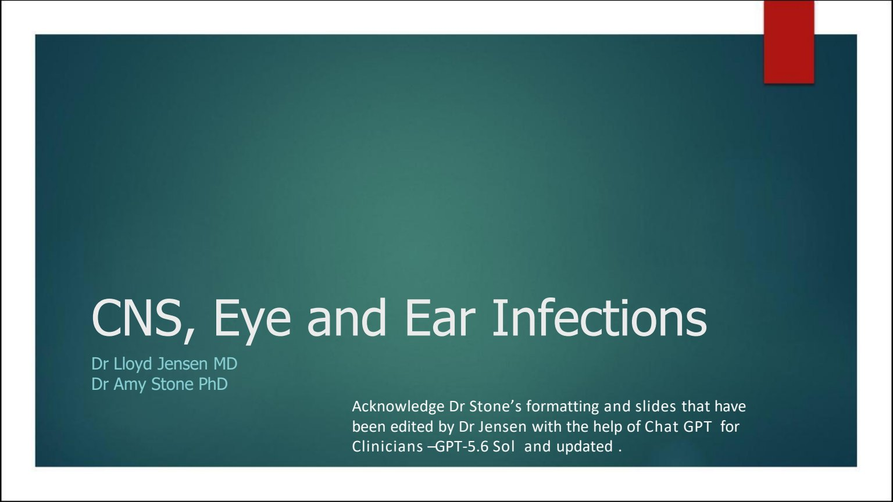</a></details><details><summary>Original extracted text</summary><pre class="transcript">CNS, Eye and Ear Infections
Dr Lloyd Jensen MD
Dr Amy Stone PhD
Acknowledge Dr Stone’s formatting and slides that have 
been edited by Dr Jensen with the help of Chat GPT for 
Clinicians –GPT-5.6 Sol and updated .</pre></details></section><section class="slide" id="slide-inf-2"><h3>Original slide 2</h3><p>Administrative page retained.</p><details><summary>Show original slide image and credits</summary><a href="images/inf-002.jpg" target="_blank" rel="noopener">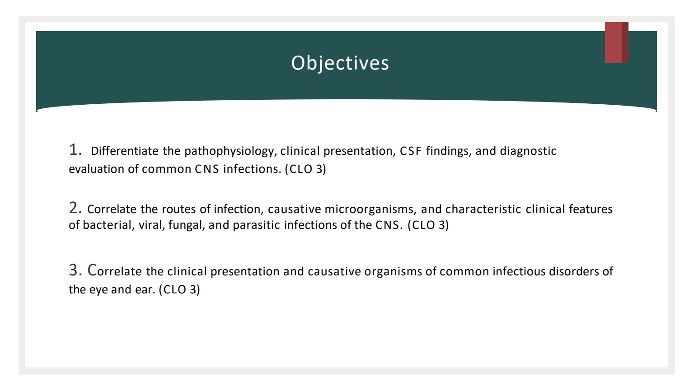</a></details><details><summary>Original extracted text</summary><pre class="transcript">Objectives
1. Differentiate the pathophysiology, clinical presentation, CSF findings, and diagnostic
evaluation of common CNS infections. (CLO 3)
2. Correlate the routes of infection, causative microorganisms, and characteristic clinical features 
of bacterial, viral, fungal, and parasitic infections of the CNS. (CLO 3)
3. Correlate the clinical presentation and causative organisms of common infectious disorders of
the eye and ear. (CLO 3)</pre></details></section><section class="slide" id="slide-inf-3"><h3>Original slide 3</h3><p>Administrative page retained.</p><details><summary>Show original slide image and credits</summary><a href="images/inf-003.jpg" target="_blank" rel="noopener"></a></details><details><summary>Original extracted text</summary><pre class="transcript">Eye Infections</pre></details></section><section class="slide" id="slide-inf-4"><h3>Original slide 4</h3><details><summary>Mapped concepts and practice</summary><ul><li><a href="index.html?q=Q001">Q001</a> — An ulcer combines epithelial breakdown with stromal involvement. Infection and inflammation can destroy corneal tissue and produce scarring or perforation.</li><li><a href="index.html?q=Q007">Q007</a> — Corneal involvement, pain, and reduced visual function suggest sight-threatening keratitis rather than a routine superficial process. Urgent eye assessment is appropriate.</li><li><a href="index.html?q=Q008">Q008</a> — Contact lenses and water exposure increase concern for Pseudomonas bacterial keratitis. Its tissue-destructive infection can progress quickly.</li><li><a href="index.html?q=Q009">Q009</a> — Acanthamoeba keratitis is strongly associated with water-contaminated lens practices. Severe pain and a ring infiltrate are clues, but not independently diagnostic.</li><li><a href="index.html?q=Q010">Q010</a> — Dendritic epithelial keratitis is characteristic of HSV. Recurrent corneal infection differs from adenoviral conjunctival inflammation.</li><li><a href="index.html?q=Q011">Q011</a> — Vegetative trauma can introduce filamentous fungi. Fusarium and Aspergillus are important fungal ulcer pathogens.</li><li><a href="index.html?q=Q012">Q012</a> — Aspergillus is a filamentous mold capable of corneal infection. Its invasive systemic manifestations differ from isolated ocular infection.</li><li><a href="index.html?q=Q017">Q017</a> — Pneumococcus can cause infection at ocular, middle-ear, and meningeal sites. Its morphology differs from staphylococcal clusters.</li><li><a href="index.html?q=Q024">Q024</a> — Loss of transparent stromal architecture impairs optics; severe tissue loss can progress to perforation.</li><li><a href="index.html?q=Q161">Q161</a> — Water-contaminated lens practices, severe pain, and a ring infiltrate are characteristic Acanthamoeba clues. Corneal evaluation and organism-directed diagnostics are needed; this is not routine superficial conjunctivitis.</li></ul></details><details><summary>Show original slide image and credits</summary><a href="images/inf-004.jpg" target="_blank" rel="noopener">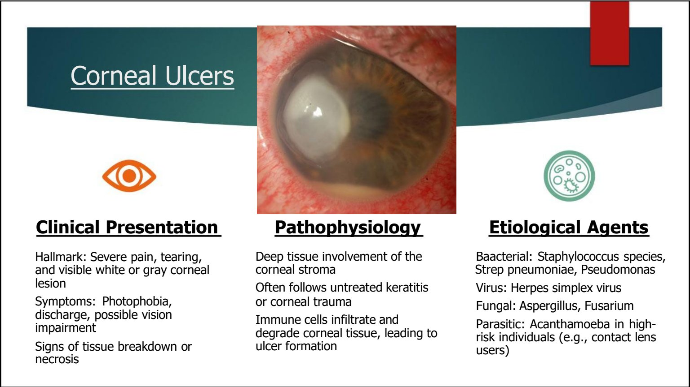</a></details><details><summary>Original extracted text</summary><pre class="transcript">Corneal Ulcers
Clinical Presentation
Hallmark: Severe pain, tearing, 
and visible white or gray corneal 
lesion
Symptoms: Photophobia,
discharge, possible vision
impairment
Signs of tissue breakdown or
necrosis
Pathophysiology
Deep tissue involvement of the 
corneal stroma
Often follows untreated keratitis
or corneal trauma
Immune cells infiltrate and 
degrade corneal tissue, leading to 
ulcer formation
Etiological Agents
Baacterial: Staphylococcus species,
Strep pneumoniae, Pseudomonas
Virus: Herpes simplex virus
Fungal: Aspergillus, Fusarium
Parasitic: Acanthamoeba in high￾risk individuals (e.g., contact lens
users)</pre></details></section><section class="slide" id="slide-inf-5"><h3>Original slide 5</h3><details><summary>Mapped concepts and practice</summary><ul><li><a href="index.html?q=Q002">Q002</a> — The cornea is involved. Epithelial injury permits microbial invasion and an inflammatory response that can progress to ulceration and vision loss.</li><li><a href="index.html?q=Q007">Q007</a> — Corneal involvement, pain, and reduced visual function suggest sight-threatening keratitis rather than a routine superficial process. Urgent eye assessment is appropriate.</li><li><a href="index.html?q=Q008">Q008</a> — Contact lenses and water exposure increase concern for Pseudomonas bacterial keratitis. Its tissue-destructive infection can progress quickly.</li><li><a href="index.html?q=Q009">Q009</a> — Acanthamoeba keratitis is strongly associated with water-contaminated lens practices. Severe pain and a ring infiltrate are clues, but not independently diagnostic.</li><li><a href="index.html?q=Q010">Q010</a> — Dendritic epithelial keratitis is characteristic of HSV. Recurrent corneal infection differs from adenoviral conjunctival inflammation.</li><li><a href="index.html?q=Q012">Q012</a> — Aspergillus is a filamentous mold capable of corneal infection. Its invasive systemic manifestations differ from isolated ocular infection.</li><li><a href="index.html?q=Q013">Q013</a> — Candida can infect a damaged cornea and is distinguished from filamentous molds by yeast/pseudohyphal morphology.</li><li><a href="index.html?q=Q024">Q024</a> — Loss of transparent stromal architecture impairs optics; severe tissue loss can progress to perforation.</li><li><a href="index.html?q=Q161">Q161</a> — Water-contaminated lens practices, severe pain, and a ring infiltrate are characteristic Acanthamoeba clues. Corneal evaluation and organism-directed diagnostics are needed; this is not routine superficial conjunctivitis.</li></ul></details><details><summary>Show original slide image and credits</summary><a href="images/inf-005.jpg" target="_blank" rel="noopener">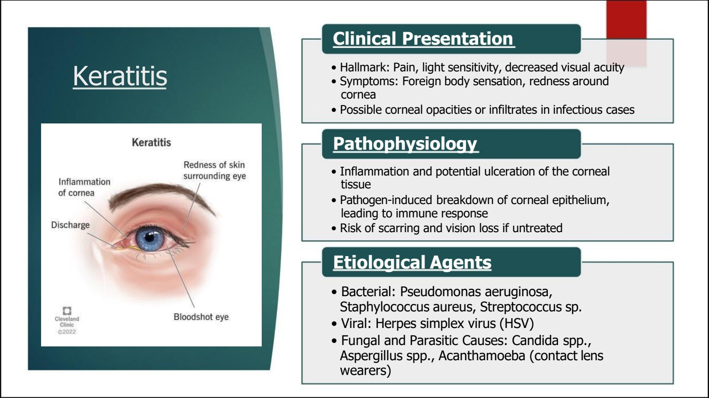</a></details><details><summary>Original extracted text</summary><pre class="transcript">Keratitis
Clinical Presentation
• Hallmark: Pain, light sensitivity, decreased visual acuity
• Symptoms: Foreign body sensation, redness around
cornea
• Possible corneal opacities or infiltrates in infectious cases
Pathophysiology
• Inflammation and potential ulceration of the corneal
tissue
• Pathogen-induced breakdown of corneal epithelium, 
leading to immune response
• Risk of scarring and vision loss if untreated
Etiological Agents
• Bacterial: Pseudomonas aeruginosa,
Staphylococcus aureus, Streptococcus sp.
• Viral: Herpes simplex virus (HSV)
• Fungal and Parasitic Causes: Candida spp., 
Aspergillus spp., Acanthamoeba (contact lens 
wearers)</pre></details></section><section class="slide" id="slide-inf-6"><h3>Original slide 6</h3><details><summary>Mapped concepts and practice</summary><ul><li><a href="index.html?q=Q003">Q003</a> — The symptoms localize to the conjunctival surface. Deeper pain, severe light sensitivity, or visual loss should trigger evaluation for corneal or intraocular disease.</li><li><a href="index.html?q=Q006">Q006</a> — Prominent itching and seasonal recurrence favor allergy. Watery discharge alone is insufficient to distinguish allergic from viral conjunctivitis.</li><li><a href="index.html?q=Q007">Q007</a> — Corneal involvement, pain, and reduced visual function suggest sight-threatening keratitis rather than a routine superficial process. Urgent eye assessment is appropriate.</li><li><a href="index.html?q=Q014">Q014</a> — Adenovirus is a common viral conjunctivitis cause and can produce pharyngoconjunctival illness. Discharge character supports but does not prove etiology.</li><li><a href="index.html?q=Q015">Q015</a> — Repeated trachoma infection can scar conjunctiva and turn eyelashes inward, injuring the cornea. Trachoma serovars differ from typical genital inclusion-conjunctivitis serovars.</li><li><a href="index.html?q=Q016">Q016</a> — S. aureus is a bacterial cause of conjunctivitis and can also invade cornea. Morphology and coagulase positivity distinguish it from pneumococci.</li><li><a href="index.html?q=Q017">Q017</a> — Pneumococcus can cause infection at ocular, middle-ear, and meningeal sites. Its morphology differs from staphylococcal clusters.</li><li><a href="index.html?q=Q018">Q018</a> — Nontypeable H. influenzae is important in conjunctivitis-otitis syndrome. This is distinct from the Hib capsule targeted by the type b vaccine.</li><li><a href="index.html?q=Q019">Q019</a> — Diphtheria can involve conjunctiva with membranous inflammation. It is not a usual cause of ordinary viral watery conjunctivitis.</li><li><a href="index.html?q=Q023">Q023</a> — Symptoms overlap across causes; no single discharge finding reliably distinguishes bacterial from viral disease.</li></ul></details><details><summary>Show original slide image and credits</summary><a href="images/inf-006.jpg" target="_blank" rel="noopener">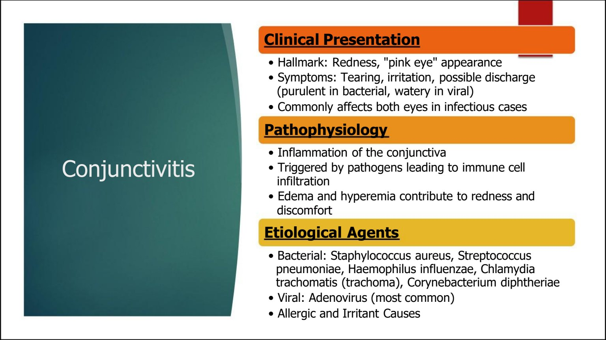</a></details><details><summary>Original extracted text</summary><pre class="transcript">Conjunctivitis
Clinical Presentation
• Hallmark: Redness, &quot;pink eye&quot; appearance
• Symptoms: Tearing, irritation, possible discharge
(purulent in bacterial, watery in viral)
• Commonly affects both eyes in infectious cases
Pathophysiology
• Inflammation of the conjunctiva
• Triggered by pathogens leading to immune cell
infiltration
• Edema and hyperemia contribute to redness and
discomfort
Etiological Agents
• Bacterial: Staphylococcus aureus, Streptococcus 
pneumoniae, Haemophilus influenzae, Chlamydia 
trachomatis (trachoma), Corynebacterium diphtheriae
• Viral: Adenovirus (most common)
• Allergic and Irritant Causes</pre></details></section><section class="slide" id="slide-inf-7"><h3>Original slide 7</h3><details><summary>Mapped concepts and practice</summary><ul><li><a href="index.html?q=Q006">Q006</a> — Prominent itching and seasonal recurrence favor allergy. Watery discharge alone is insufficient to distinguish allergic from viral conjunctivitis.</li><li><a href="index.html?q=Q023">Q023</a> — Symptoms overlap across causes; no single discharge finding reliably distinguishes bacterial from viral disease.</li></ul></details><details><summary>Show original slide image and credits</summary><a href="images/inf-007.jpg" target="_blank" rel="noopener">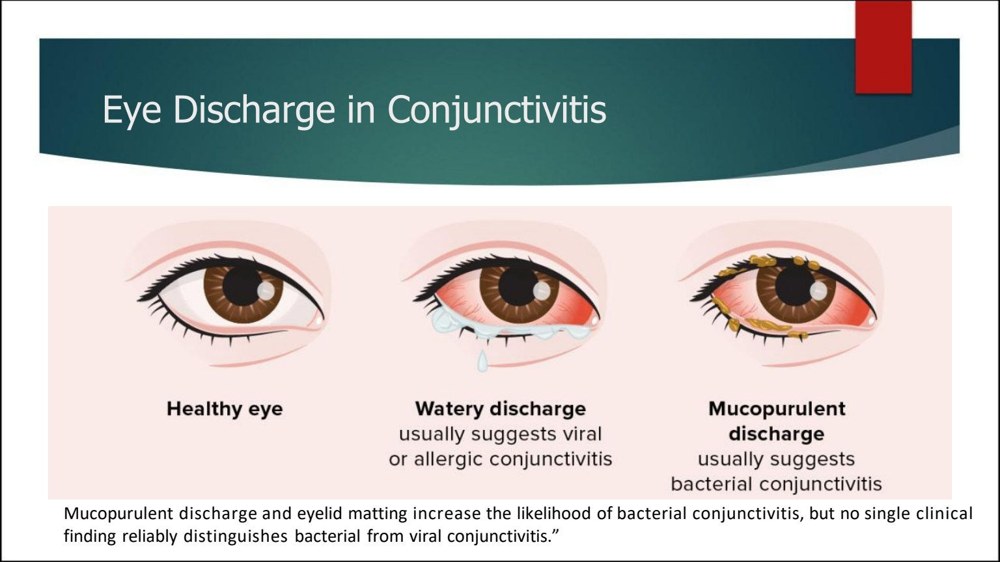</a></details><details><summary>Original extracted text</summary><pre class="transcript">Eye Discharge in Conjunctivitis
Mucopurulent discharge and eyelid matting increase the likelihood of bacterial conjunctivitis, but no single clinical 
finding reliably distinguishes bacterial from viral conjunctivitis.”</pre></details></section><section class="slide" id="slide-inf-8"><h3>Original slide 8</h3><details><summary>Mapped concepts and practice</summary><ul><li><a href="index.html?q=Q004">Q004</a> — Anterior uveal inflammation affects the iris/ciliary body and produces ciliary injection and cells/flare. Infectious, autoimmune, and idiopathic causes are possible.</li><li><a href="index.html?q=Q020">Q020</a> — HSV can cause anterior uveal inflammation, often alongside corneal findings. Not all uveitis is infectious, so systemic/immune alternatives remain important.</li><li><a href="index.html?q=Q021">Q021</a> — Profound cellular immunodeficiency predisposes to CMV retinitis. Ocular examination is central; a blood viral load alone does not establish the retinal diagnosis.</li><li><a href="index.html?q=Q022">Q022</a> — Ocular toxoplasmosis commonly produces retinochoroiditis. The slide&#x27;s suggestion that Toxoplasma is a rare fungal cause is incorrect: it is a protozoan and an important ocular pathogen.</li><li><a href="index.html?q=Q025">Q025</a> — Uveitis can affect anterior, intermediate, posterior, or all uveal compartments depending on its pattern.</li><li><a href="index.html?q=Q026">Q026</a> — Uveitis is an inflammatory syndrome, not proof of infection. Granulomatous versus nongranulomatous morphology and systemic context help narrow causes.</li><li><a href="index.html?q=Q162">Q162</a> — CMV retinitis is especially associated with profound cellular immune deficiency. The retinal lesion, not a nonspecific surface symptom or blood PCR alone, establishes the clinical concern. Prompt treatment assessment protects remaining vision.</li></ul></details><details><summary>Show original slide image and credits</summary><a href="images/inf-008.jpg" target="_blank" rel="noopener">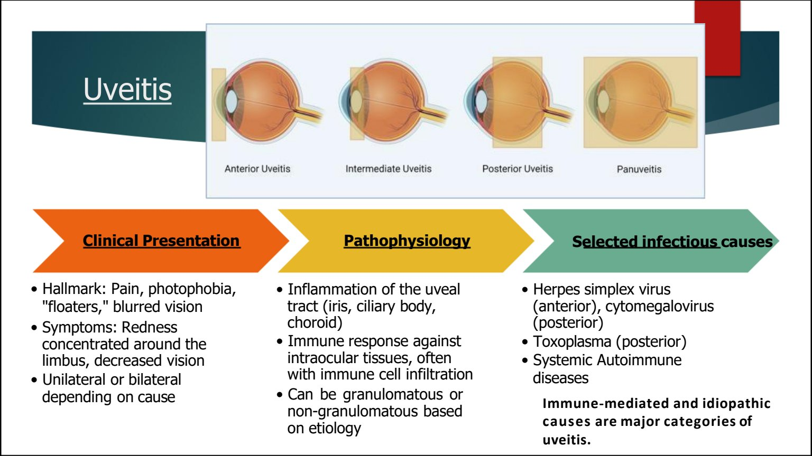</a></details><details><summary>Original extracted text</summary><pre class="transcript">Uveitis
Clinical Presentation
• Hallmark: Pain, photophobia,
&quot;floaters,&quot; blurred vision
• Symptoms: Redness 
concentrated around the 
limbus, decreased vision
• Unilateral or bilateral
depending on cause
Pathophysiology
• Inflammation of the uveal 
tract (iris, ciliary body, 
choroid)
• Immune response against 
intraocular tissues, often 
with immune cell infiltration
• Can be granulomatous or
non-granulomatous based
on etiology
Selected infectious causes
• Herpes simplex virus 
(anterior), cytomegalovirus 
(posterior)
• Toxoplasma (posterior)
• Systemic Autoimmune
diseases
Immune-mediated and idiopathic 
causes are major categories of 
uveitis.</pre></details></section><section class="slide" id="slide-inf-9"><h3>Original slide 9</h3><details><summary>Mapped concepts and practice</summary><ul><li><a href="index.html?q=Q005">Q005</a> — Retinal damage explains posterior visual symptoms and funduscopic necrosis. Cytopathic viral injury can progress rapidly and threaten sight.</li><li><a href="index.html?q=Q021">Q021</a> — Profound cellular immunodeficiency predisposes to CMV retinitis. Ocular examination is central; a blood viral load alone does not establish the retinal diagnosis.</li><li><a href="index.html?q=Q022">Q022</a> — Ocular toxoplasmosis commonly produces retinochoroiditis. The slide&#x27;s suggestion that Toxoplasma is a rare fungal cause is incorrect: it is a protozoan and an important ocular pathogen.</li><li><a href="index.html?q=Q027">Q027</a> — Damage to neural retina can produce scotomas and irreversible vision loss. Ocular localization and organism testing guide care.</li><li><a href="index.html?q=Q142">Q142</a> — Reactivation toxoplasmosis commonly causes focal encephalitis/abscess-like lesions. Primary CNS lymphoma and other infections remain alternatives; ring enhancement alone is not diagnostic.</li><li><a href="index.html?q=Q162">Q162</a> — CMV retinitis is especially associated with profound cellular immune deficiency. The retinal lesion, not a nonspecific surface symptom or blood PCR alone, establishes the clinical concern. Prompt treatment assessment protects remaining vision.</li></ul></details><details><summary>Show original slide image and credits</summary><a href="images/inf-009.jpg" target="_blank" rel="noopener">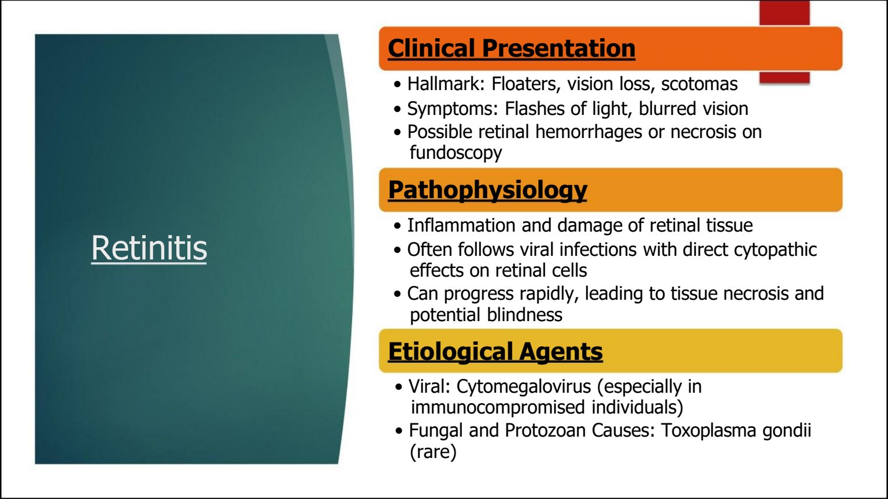</a></details><details><summary>Original extracted text</summary><pre class="transcript">Retinitis
Clinical Presentation
• Hallmark: Floaters, vision loss, scotomas
• Symptoms: Flashes of light, blurred vision
• Possible retinal hemorrhages or necrosis on
fundoscopy
Pathophysiology
• Inflammation and damage of retinal tissue
• Often follows viral infections with direct cytopathic
effects on retinal cells
• Can progress rapidly, leading to tissue necrosis and
potential blindness
Etiological Agents
• Viral: Cytomegalovirus (especially in
immunocompromised individuals)
• Fungal and Protozoan Causes: Toxoplasma gondii
(rare)</pre></details></section><section class="slide" id="slide-inf-10"><h3>Original slide 10</h3><p>Administrative page retained.</p><details><summary>Show original slide image and credits</summary><a href="images/inf-010.jpg" target="_blank" rel="noopener">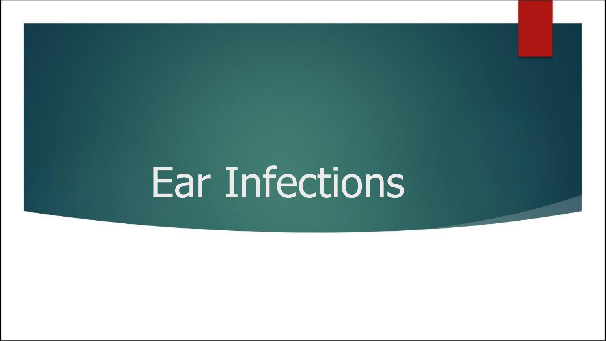</a></details><details><summary>Original extracted text</summary><pre class="transcript">Ear Infections</pre></details></section><section class="slide" id="slide-inf-11"><h3>Original slide 11</h3><details><summary>Mapped concepts and practice</summary><ul><li><a href="index.html?q=Q028">Q028</a> — Water exposure and canal barrier disruption favor AOE. Tragal/auricular tenderness localizes the process to the external canal rather than the middle ear.</li><li><a href="index.html?q=Q030">Q030</a> — Fungi can cause external canal infection, particularly in chronic or predisposed settings. Aspergillus and Candida are listed organisms.</li><li><a href="index.html?q=Q032">Q032</a> — This supplemental application distinguishes a dangerous invasive infection from routine AOE. Pseudomonas is a characteristic cause in the appropriate host.</li><li><a href="index.html?q=Q035">Q035</a> — Aspergillus is a major mold cause of otomycosis. Candida is an alternative yeast cause but does not match the identified mold.</li><li><a href="index.html?q=Q036">Q036</a> — Candida can produce otomycosis, especially with chronic local disruption or host predisposition.</li><li><a href="index.html?q=Q044">Q044</a> — Canal edema/debris obstructs AOE transmission, while middle-ear fluid impairs drum/ossicular motion in AOM, producing conductive loss.</li><li><a href="index.html?q=Q163">Q163</a> — Upper-airway inflammation can impair Eustachian ventilation, promoting middle-ear stasis and infection. Acute symptoms plus a bulging poorly mobile drum distinguish AOM from isolated canal infection and from a nonacute effusion.</li></ul></details><details><summary>Show original slide image and credits</summary><a href="images/inf-011.jpg" target="_blank" rel="noopener">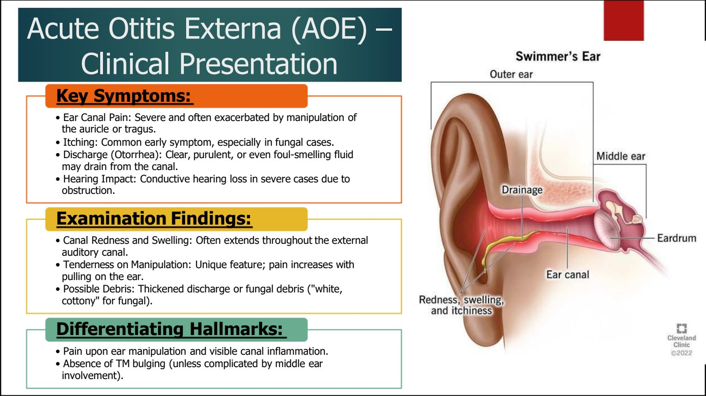</a></details><details><summary>Original extracted text</summary><pre class="transcript">Key Symptoms:
• Ear Canal Pain: Severe and often exacerbated by manipulation of
the auricle or tragus.
• Itching: Common early symptom, especially in fungal cases.
• Discharge (Otorrhea): Clear, purulent, or even foul-smelling fluid
may drain from the canal.
• Hearing Impact: Conductive hearing loss in severe cases due to
obstruction.
Examination Findings:
• Canal Redness and Swelling: Often extends throughout the external
auditory canal.
• Tenderness on Manipulation: Unique feature; pain increases with
pulling on the ear.
• Possible Debris: Thickened discharge or fungal debris (&quot;white,
cottony&quot; for fungal).
Differentiating Hallmarks:
• Pain upon ear manipulation and visible canal inflammation.
• Absence of TM bulging (unless complicated by middle ear
involvement).
Acute Otitis Externa (AOE) –
Clinical Presentation</pre></details></section><section class="slide" id="slide-inf-12"><h3>Original slide 12</h3><details><summary>Mapped concepts and practice</summary><ul><li><a href="index.html?q=Q028">Q028</a> — Water exposure and canal barrier disruption favor AOE. Tragal/auricular tenderness localizes the process to the external canal rather than the middle ear.</li><li><a href="index.html?q=Q030">Q030</a> — Fungi can cause external canal infection, particularly in chronic or predisposed settings. Aspergillus and Candida are listed organisms.</li><li><a href="index.html?q=Q032">Q032</a> — This supplemental application distinguishes a dangerous invasive infection from routine AOE. Pseudomonas is a characteristic cause in the appropriate host.</li><li><a href="index.html?q=Q033">Q033</a> — Moisture-rich canal conditions favor Pseudomonas. This is a classic external-ear pathogen rather than one of the usual encapsulated respiratory AOM bacteria.</li><li><a href="index.html?q=Q034">Q034</a> — Disruption of canal skin permits S. aureus infection. Mechanical trauma, hearing aids, and eczema are additional barrier-related risk factors.</li><li><a href="index.html?q=Q035">Q035</a> — Aspergillus is a major mold cause of otomycosis. Candida is an alternative yeast cause but does not match the identified mold.</li><li><a href="index.html?q=Q036">Q036</a> — Candida can produce otomycosis, especially with chronic local disruption or host predisposition.</li><li><a href="index.html?q=Q041">Q041</a> — Swimming, excessive cleaning, hearing aids, and eczema can compromise the protective canal environment and permit microbial growth.</li><li><a href="index.html?q=Q163">Q163</a> — Upper-airway inflammation can impair Eustachian ventilation, promoting middle-ear stasis and infection. Acute symptoms plus a bulging poorly mobile drum distinguish AOM from isolated canal infection and from a nonacute effusion.</li></ul></details><details><summary>Show original slide image and credits</summary><a href="images/inf-012.jpg" target="_blank" rel="noopener">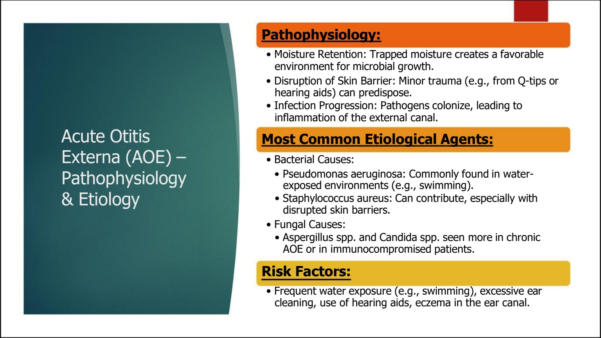</a></details><details><summary>Original extracted text</summary><pre class="transcript">Acute Otitis 
Externa (AOE) –
Pathophysiology 
&amp; Etiology
Pathophysiology:
• Moisture Retention: Trapped moisture creates a favorable
environment for microbial growth.
• Disruption of Skin Barrier: Minor trauma (e.g., from Q-tips or 
hearing aids) can predispose.
• Infection Progression: Pathogens colonize, leading to
inflammation of the external canal.
Most Common Etiological Agents:
• Bacterial Causes:
• Pseudomonas aeruginosa: Commonly found in water￾exposed environments (e.g., swimming).
• Staphylococcus aureus: Can contribute, especially with
disrupted skin barriers.
• Fungal Causes:
• Aspergillus spp. and Candida spp. seen more in chronic
AOE or in immunocompromised patients.
Risk Factors:
• Frequent water exposure (e.g., swimming), excessive ear
cleaning, use of hearing aids, eczema in the ear canal.</pre></details></section><section class="slide" id="slide-inf-13"><h3>Original slide 13</h3><details><summary>Mapped concepts and practice</summary><ul><li><a href="index.html?q=Q029">Q029</a> — Middle-ear fluid and pressure produce bulging and reduced mobility. Acute symptoms distinguish AOM from uncomplicated residual effusion.</li><li><a href="index.html?q=Q031">Q031</a> — Effusion can persist without acute infection. A red drum or fluid alone does not establish acute bacterial otitis media.</li><li><a href="index.html?q=Q042">Q042</a> — Fluid and pressure behind the drum cause pain, bulging, and impaired vibration. Young Eustachian tube anatomy and airway inflammation increase susceptibility.</li><li><a href="index.html?q=Q043">Q043</a> — Fluid and pressure reduce drum mobility. Together with acute bulging and symptoms, this supports AOM.</li><li><a href="index.html?q=Q044">Q044</a> — Canal edema/debris obstructs AOE transmission, while middle-ear fluid impairs drum/ossicular motion in AOM, producing conductive loss.</li><li><a href="index.html?q=Q163">Q163</a> — Upper-airway inflammation can impair Eustachian ventilation, promoting middle-ear stasis and infection. Acute symptoms plus a bulging poorly mobile drum distinguish AOM from isolated canal infection and from a nonacute effusion.</li></ul></details><details><summary>Show original slide image and credits</summary><a href="images/inf-013.jpg" target="_blank" rel="noopener">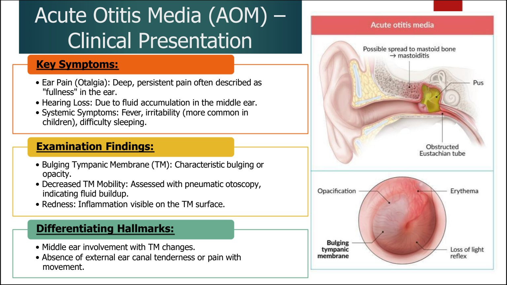</a></details><details><summary>Original extracted text</summary><pre class="transcript">Key Symptoms:
• Ear Pain (Otalgia): Deep, persistent pain often described as
&quot;fullness&quot; in the ear.
• Hearing Loss: Due to fluid accumulation in the middle ear.
• Systemic Symptoms: Fever, irritability (more common in
children), difficulty sleeping.
Examination Findings:
• Bulging Tympanic Membrane (TM): Characteristic bulging or
opacity.
• Decreased TM Mobility: Assessed with pneumatic otoscopy,
indicating fluid buildup.
• Redness: Inflammation visible on the TM surface.
Differentiating Hallmarks:
• Middle ear involvement with TM changes.
• Absence of external ear canal tenderness or pain with
movement.
Acute Otitis Media (AOM) –
Clinical Presentation</pre></details></section><section class="slide" id="slide-inf-14"><h3>Original slide 14</h3><details><summary>Mapped concepts and practice</summary><ul><li><a href="index.html?q=Q018">Q018</a> — Nontypeable H. influenzae is important in conjunctivitis-otitis syndrome. This is distinct from the Hib capsule targeted by the type b vaccine.</li><li><a href="index.html?q=Q029">Q029</a> — Middle-ear fluid and pressure produce bulging and reduced mobility. Acute symptoms distinguish AOM from uncomplicated residual effusion.</li><li><a href="index.html?q=Q031">Q031</a> — Effusion can persist without acute infection. A red drum or fluid alone does not establish acute bacterial otitis media.</li><li><a href="index.html?q=Q037">Q037</a> — Nontypeable H. influenzae is common in AOM and conjunctivitis-otitis syndrome. Ranking it as universally the leading cause would overstate cohort-dependent epidemiology.</li><li><a href="index.html?q=Q038">Q038</a> — M. catarrhalis is a common respiratory-colonizing pediatric AOM organism. It should not be confused with meningococcal invasive disease solely because both are gram-negative diplococci.</li><li><a href="index.html?q=Q039">Q039</a> — Pneumococcus remains an important bacterial middle-ear pathogen and can spread or cause invasive disease in susceptible settings.</li><li><a href="index.html?q=Q040">Q040</a> — RSV is one of the respiratory viruses listed as predisposing contributors. The viral trigger and any subsequent bacterial isolate are different components of the process.</li><li><a href="index.html?q=Q042">Q042</a> — Fluid and pressure behind the drum cause pain, bulging, and impaired vibration. Young Eustachian tube anatomy and airway inflammation increase susceptibility.</li><li><a href="index.html?q=Q163">Q163</a> — Upper-airway inflammation can impair Eustachian ventilation, promoting middle-ear stasis and infection. Acute symptoms plus a bulging poorly mobile drum distinguish AOM from isolated canal infection and from a nonacute effusion.</li></ul></details><details><summary>Show original slide image and credits</summary><a href="images/inf-014.jpg" target="_blank" rel="noopener">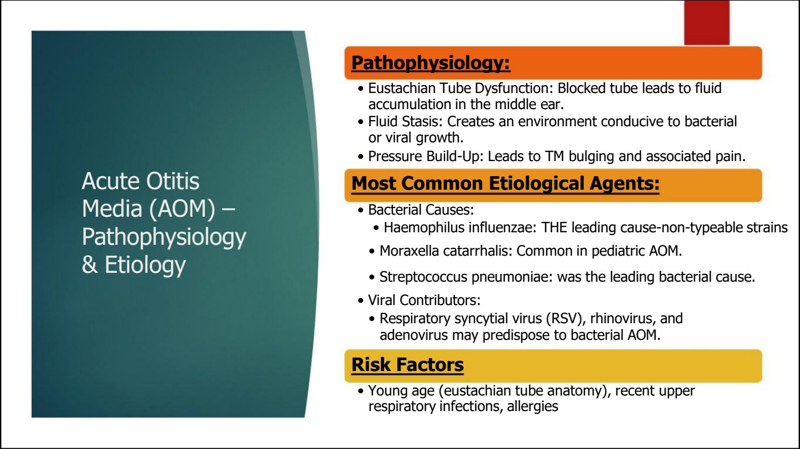</a></details><details><summary>Original extracted text</summary><pre class="transcript">Acute Otitis 
Media (AOM) –
Pathophysiology 
&amp; Etiology
Pathophysiology:
• Eustachian Tube Dysfunction: Blocked tube leads to fluid
accumulation in the middle ear.
• Fluid Stasis: Creates an environment conducive to bacterial
or viral growth.
• Pressure Build-Up: Leads to TM bulging and associated pain.
Most Common Etiological Agents:
• Bacterial Causes:
• Haemophilus influenzae: THE leading cause-non-typeable strains
• Moraxella catarrhalis: Common in pediatric AOM.
• Streptococcus pneumoniae: was the leading bacterial cause.
• Viral Contributors:
• Respiratory syncytial virus (RSV), rhinovirus, and
adenovirus may predispose to bacterial AOM.
Risk Factors
• Young age (eustachian tube anatomy), recent upper
respiratory infections, allergies</pre></details></section><section class="slide" id="slide-inf-15"><h3>Original slide 15</h3><p>Administrative page retained.</p><details><summary>Show original slide image and credits</summary><a href="images/inf-015.jpg" target="_blank" rel="noopener">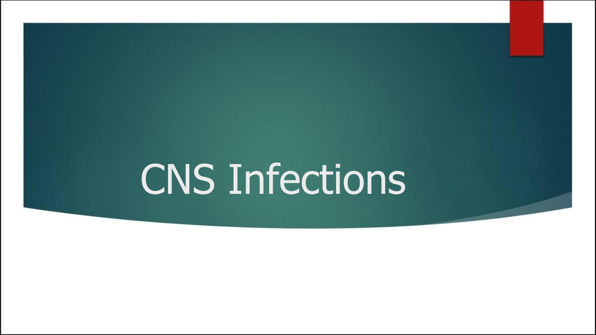</a></details><details><summary>Original extracted text</summary><pre class="transcript">CNS Infections</pre></details></section><section class="slide" id="slide-inf-16"><h3>Original slide 16</h3><details><summary>Mapped concepts and practice</summary><ul><li><a href="index.html?q=Q045">Q045</a> — The dominant features reflect meningeal irritation. Altered consciousness can also occur in severe meningitis, so syndromes overlap rather than remaining absolutely separate.</li><li><a href="index.html?q=Q046">Q046</a> — Parenchymal dysfunction is central to encephalitis. Sustained altered mental status plus supportive findings distinguishes it from headache/neck stiffness alone.</li><li><a href="index.html?q=Q047">Q047</a> — Meningeal and brain involvement produce overlapping symptoms. The term does not specify a single organism or exclude noninfectious inflammation.</li><li><a href="index.html?q=Q048">Q048</a> — Postinfectious immune-mediated demyelination supports ADEM. It is an important example of postinfectious disease, but not a synonym for every postinfectious encephalopathy.</li><li><a href="index.html?q=Q049">Q049</a> — AFM is a clinical/radiologic syndrome with motor gray-matter injury and nonpolio causes, including some enteroviruses. Sensory findings are often less prominent than weakness.</li><li><a href="index.html?q=Q050">Q050</a> — Motor, sensory, and autonomic involvement supports transverse myelitis. Symmetry is common but not absolute, and early reflexes may be reduced during spinal shock.</li><li><a href="index.html?q=Q054">Q054</a> — ADEM involves autoimmune inflammatory demyelination and often encephalopathy. Direct infection and autoimmune mechanisms require different diagnostic considerations.</li><li><a href="index.html?q=Q098">Q098</a> — Postinfectious immune injury can produce ADEM. Viral exposure is a trigger rather than necessarily the persistent agent in the lesion.</li><li><a href="index.html?q=Q168">Q168</a> — ADEM is a postinfectious inflammatory demyelinating syndrome with encephalopathy and multifocal deficits. It is not simply direct viral multiplication in neurons, and not every postinfectious encephalopathy is ADEM.</li></ul></details><details><summary>Show original slide image and credits</summary><a href="images/inf-016.jpg" target="_blank" rel="noopener">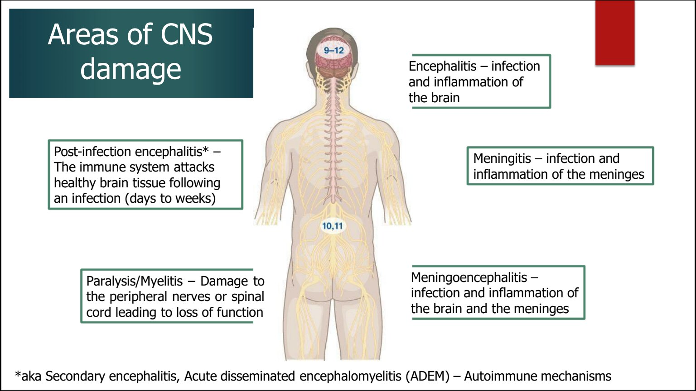</a></details><details><summary>Original extracted text</summary><pre class="transcript">Meningitis – infection and 
inflammation of the meninges
Encephalitis – infection 
and inflammation of 
the brain
Paralysis/Myelitis – Damage to
the peripheral nerves or spinal
cord leading to loss of function
Post-infection encephalitis* –
The immune system attacks 
healthy brain tissue following 
an infection (days to weeks)
Meningoencephalitis –
infection and inflammation of 
the brain and the meninges
*aka Secondary encephalitis, Acute disseminated encephalomyelitis (ADEM) – Autoimmune mechanisms
Areas of CNS 
damage</pre></details></section><section class="slide" id="slide-inf-17"><h3>Original slide 17</h3><details><summary>Mapped concepts and practice</summary><ul><li><a href="index.html?q=Q048">Q048</a> — Postinfectious immune-mediated demyelination supports ADEM. It is an important example of postinfectious disease, but not a synonym for every postinfectious encephalopathy.</li><li><a href="index.html?q=Q049">Q049</a> — AFM is a clinical/radiologic syndrome with motor gray-matter injury and nonpolio causes, including some enteroviruses. Sensory findings are often less prominent than weakness.</li><li><a href="index.html?q=Q098">Q098</a> — Postinfectious immune injury can produce ADEM. Viral exposure is a trigger rather than necessarily the persistent agent in the lesion.</li><li><a href="index.html?q=Q101">Q101</a> — Enteroviruses are common aseptic meningitis agents. Clinical syndrome alone does not specify every serotype, and early CSF may still be neutrophilic.</li><li><a href="index.html?q=Q102">Q102</a> — HSV-1 classically causes necrotizing temporal encephalitis. CSF PCR is useful; treatment should not be delayed while awaiting confirmation when suspicion is substantial.</li><li><a href="index.html?q=Q103">Q103</a> — HSV-2 can cause recurrent lymphocytic meningitis. A meningeal syndrome differs from the classic HSV-1 temporal-parenchymal presentation.</li><li><a href="index.html?q=Q104">Q104</a> — VZV can cause direct CNS infection and vasculopathy; a rash may help but is not mandatory in every neurologic case.</li><li><a href="index.html?q=Q105">Q105</a> — Mumps is a recognized viral meningitis cause. CNS involvement can also occur without obvious parotitis.</li><li><a href="index.html?q=Q106">Q106</a> — LCMV is linked to rodent exposure. Exposure history can refine the viral differential when the CSF pattern is nonspecific.</li><li><a href="index.html?q=Q107">Q107</a> — Acute HIV can produce aseptic meningitis/meningoencephalitis. This is separate from opportunistic infections resulting from advanced immune deficiency.</li><li><a href="index.html?q=Q108">Q108</a> — Rabies can produce hydrophobia from pharyngeal spasms, followed by progressive neurologic disease. Hydrophobia is characteristic but not present in every case.</li><li><a href="index.html?q=Q109">Q109</a> — West Nile neuroinvasive disease can combine meningoencephalitis and a polio-like motor syndrome. This is a nonpolio cause of acute flaccid paralysis.</li><li><a href="index.html?q=Q110">Q110</a> — Anterior horn motor neuron injury causes weakness, wasting, and hyporeflexia with relative sensory sparing. Poliovirus also causes nonparalytic/asymptomatic infections.</li><li><a href="index.html?q=Q111">Q111</a> — Measles can trigger postinfectious immune demyelination. This mechanism is distinct from directly equating all measles CNS complications with ADEM.</li><li><a href="index.html?q=Q112">Q112</a> — Influenza can be associated with several infection-triggered neurologic syndromes. Defining the syndrome requires examination, imaging, and exclusion of active/alternative causes.</li><li><a href="index.html?q=Q121">Q121</a> — Selected nonpolio enteroviruses can cause motor disease. The source gives specific historical A-type examples; syndrome and confirmatory testing are more useful than assuming paralysis proves polio.</li><li><a href="index.html?q=Q154">Q154</a> — Both are arboviral encephalitis agents. West Nile is also mosquito-borne but belongs to a different viral family/genus grouping.</li><li><a href="index.html?q=Q155">Q155</a> — These infections are listed as possible preceding triggers. Not every neurologic syndrome after these infections is ADEM or necessarily caused by persistent CNS replication.</li><li><a href="index.html?q=Q156">Q156</a> — The list complements common enteroviruses and HSV-2. A list association does not mean all agents are equally frequent in every age group.</li><li><a href="index.html?q=Q166">Q166</a> — Temporal parenchymal injury with behavioral change and seizures is characteristic of HSV-1 encephalitis. CSF PCR supports diagnosis; hemorrhagic CSF can occur but is neither required nor specific by itself.</li><li><a href="index.html?q=Q167">Q167</a> — Rabies can incubate after wound healing, then enter neural pathways and cause devastating CNS disease. Water-triggered pharyngeal spasms are characteristic; prophylaxis acts before symptoms and is not replaced by waiting for clinical illness.</li><li><a href="index.html?q=Q168">Q168</a> — ADEM is a postinfectious inflammatory demyelinating syndrome with encephalopathy and multifocal deficits. It is not simply direct viral multiplication in neurons, and not every postinfectious encephalopathy is ADEM.</li></ul></details><details><summary>Show original slide image and credits</summary><a href="images/inf-017.jpg" target="_blank" rel="noopener">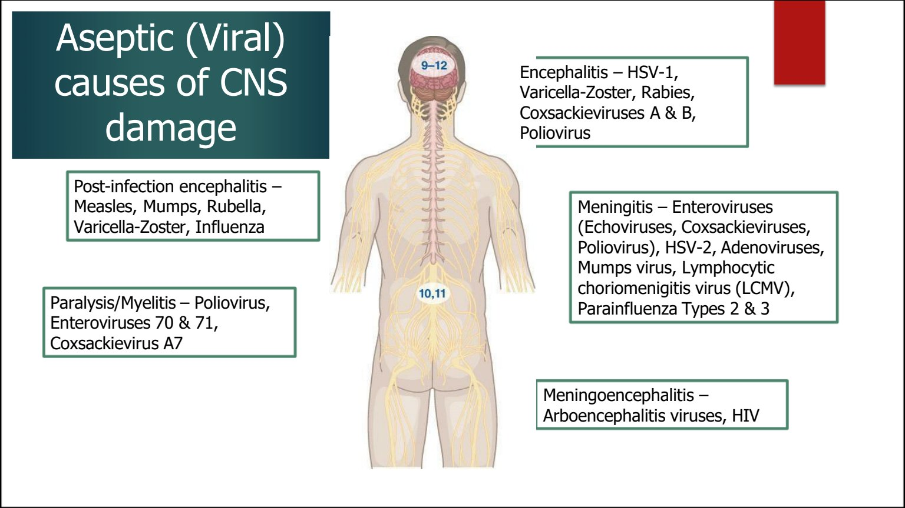</a></details><details><summary>Original extracted text</summary><pre class="transcript">Meningitis
– Enteroviruses 
(Echoviruses, Coxsackieviruses, 
Poliovirus), HSV
-2, Adenoviruses, 
Mumps virus, Lymphocytic 
choriomenigitis virus (LCMV), 
Parainfluenza Types
2
&amp;
3
Encephalitis
– HSV
-1, 
Varicella
-Zoster, Rabies, 
Coxsackieviruses
A
&amp; B, 
Poliovirus
Paralysis/Myelitis
– Poliovirus, 
Enteroviruses 70
&amp; 71, 
Coxsackievirus A7
Post
-infection encephalitis
–
Measles, Mumps, Rubella, 
Varicella
-Zoster, Influenza
Meningoencephalitis
–
Arboencephalitis viruses, HIV
Aseptic (Viral) 
causes of CNS 
damage</pre></details></section><section class="slide" id="slide-inf-18"><h3>Original slide 18</h3><details><summary>Mapped concepts and practice</summary><ul><li><a href="index.html?q=Q051">Q051</a> — Contiguous spread can produce a focal pyogenic collection with surrounding edema. Ring enhancement has a broad differential and must be interpreted with clinical and imaging details.</li><li><a href="index.html?q=Q052">Q052</a> — The collection is subdural, not within brain tissue or outside dura. This is a neurosurgical/infectious emergency because rapid spread and mass effect can occur.</li><li><a href="index.html?q=Q057">Q057</a> — Chronicity, lymphocytes, high protein, and low glucose with a compatible exposure favor TB. Fungal disease can resemble this, so specific tests are required.</li><li><a href="index.html?q=Q058">Q058</a> — Neurosyphilis can cause a milder lymphocytic CSF profile. CSF VDRL and sensitive treponemal tests have different diagnostic roles.</li><li><a href="index.html?q=Q059">Q059</a> — Profound immune suppression can blunt CSF inflammation in cryptococcosis. A low cell count does not exclude serious fungal CNS infection.</li><li><a href="index.html?q=Q069">Q069</a> — Naegleria trophozoites may be visible in a fresh wet mount. Specific reference PCR/microscopy confirms identity rather than treating the organisms as leukocytes.</li><li><a href="index.html?q=Q081">Q081</a> — S. agalactiae is a major neonatal meningitis pathogen. The age and microbiology distinguish it from common older-child meningococci or pneumococci.</li><li><a href="index.html?q=Q082">Q082</a> — E. coli is an important neonatal CNS pathogen, and the K1 capsule is associated with neuroinvasive strains.</li><li><a href="index.html?q=Q083">Q083</a> — Meningococcal meningitis can accompany invasive bacteremia and a nonblanching petechial/purpuric rash. This is an urgent illness; rash is neither required nor uniquely diagnostic.</li><li><a href="index.html?q=Q084">Q084</a> — Pneumococcal invasive disease is promoted by impaired clearance of encapsulated bacteria. Ear/sinus infection or a CSF leak can also be relevant sources/risks.</li><li><a href="index.html?q=Q085">Q085</a> — Listeria is important in older/immunocompromised hosts and neonates. Its CSF differential can be mixed; routine cephalosporins do not provide reliable coverage.</li><li><a href="index.html?q=Q086">Q086</a> — Hib invasive disease differs from common nontypeable middle-ear disease. Vaccination changes population incidence but does not make every H. influenzae infection vaccine-preventable.</li><li><a href="index.html?q=Q087">Q087</a> — TB meningitis is a subacute/chronic process with characteristic basal complications. NAAT and culture are more useful than relying only on an insensitive smear.</li><li><a href="index.html?q=Q088">Q088</a> — T. pallidum can cause meningitis and broader neurosyphilitic syndromes. A positive appropriately interpreted CSF VDRL supports CNS involvement.</li><li><a href="index.html?q=Q089">Q089</a> — This constellation supports Lyme neuroborreliosis. The organism can involve meninges, cranial nerves, and roots rather than causing only a nonspecific rash.</li><li><a href="index.html?q=Q090">Q090</a> — Hematogenous seeding from endocarditis can cause brain infection. This differs from the mixed oral/anaerobic flora often found after contiguous sinus or dental spread.</li><li><a href="index.html?q=Q091">Q091</a> — Contiguous spread commonly involves streptococci and anaerobic partners. The source guides empiric coverage and diagnostic sampling.</li><li><a href="index.html?q=Q132">Q132</a> — Cryptococcus commonly causes subacute meningoencephalitis in this host. CSF can have few cells despite severe disease, and raised pressure is clinically important.</li><li><a href="index.html?q=Q134">Q134</a> — Hematogenous Candida can invade parenchyma and produce microabscesses. This differs from a purely superficial colonization diagnosis.</li><li><a href="index.html?q=Q142">Q142</a> — Reactivation toxoplasmosis commonly causes focal encephalitis/abscess-like lesions. Primary CNS lymphoma and other infections remain alternatives; ring enhancement alone is not diagnostic.</li><li><a href="index.html?q=Q143">Q143</a> — Neurocysticercosis can produce viable, degenerating, or calcified cysts. It is a larval cyst disease rather than an ordinary bacterial pus collection.</li><li><a href="index.html?q=Q144">Q144</a> — Naegleria enters through nasal/olfactory pathways and causes PAM. The CSF can resemble bacterial meningitis with neutrophils and low glucose.</li><li><a href="index.html?q=Q145">Q145</a> — Acanthamoeba can cause granulomatous amebic encephalitis and keratitis, with different entry routes and host contexts.</li><li><a href="index.html?q=Q146">Q146</a> — Balamuthia can enter through skin or respiratory routes and cause CNS disease, including in people without major immune suppression.</li><li><a href="index.html?q=Q152">Q152</a> — Degenerating cysts can enhance and cause seizures, but their biology and management differ from a bacterial pus collection.</li><li><a href="index.html?q=Q157">Q157</a> — Organisms depend on source, trauma/surgery, and host. Anaerobic gram-negative organisms can be included; fungal causes occur in selected hosts rather than every case.</li><li><a href="index.html?q=Q164">Q164</a> — The ratio is 0.20 with marked neutrophilic inflammation and high protein. Invasive meningococcal disease is a concern given the rash/context, but the pattern alone does not identify the organism. Prompt empiric therapy is essential.</li><li><a href="index.html?q=Q165">Q165</a> — Cryptococcus can produce severe meningoencephalitis with little CSF pleocytosis in an immunocompromised host. Opening pressure and organism-specific antigen findings are crucial; a mild cell count is not evidence of trivial disease.</li><li><a href="index.html?q=Q169">Q169</a> — Naegleria causes primary amebic meningoencephalitis after contaminated water enters the nose. A neutrophilic CSF profile does not make it bacterial; fresh wet mount and specific molecular testing can identify the organism.</li><li><a href="index.html?q=Q170">Q170</a> — Human cysticercosis follows ingestion of eggs from a human carrier. It can occur without pork consumption. Larval brain cysts can be viable, inflamed, or calcified and should not be equated with a uniform pyogenic abscess.</li></ul></details><details><summary>Show original slide image and credits</summary><a href="images/inf-018.jpg" target="_blank" rel="noopener">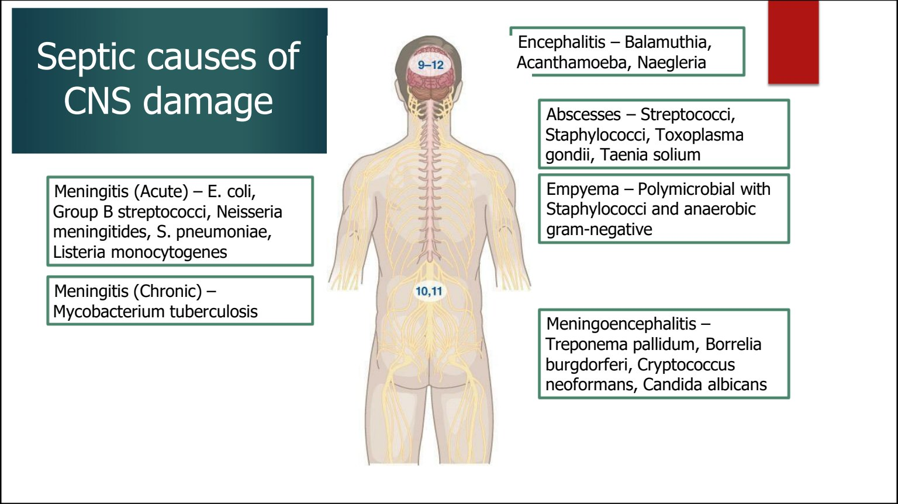</a></details><details><summary>Original extracted text</summary><pre class="transcript">Meningitis (Acute)
– E. coli, 
Group
B streptococci, Neisseria 
meningitides, S. pneumoniae, 
Listeria monocytogenes
Encephalitis
– Balamuthia, 
Acanthamoeba, Naegleria
Meningoencephalitis
–
Treponema pallidum, Borrelia 
burgdorferi, Cryptococcus 
neoformans, Candida albicans
Meningitis (Chronic)
–
Mycobacterium tuberculosis
Abscesses
– Streptococci, 
Staphylococci, Toxoplasma 
gondii, Taenia solium
Empyema
– Polymicrobial with 
Staphylococci and anaerobic 
gram
-negative
Septic causes of 
CNS damage</pre></details></section><section class="slide" id="slide-inf-19"><h3>Original slide 19</h3><details><summary>Mapped concepts and practice</summary><ul><li><a href="index.html?q=Q045">Q045</a> — The dominant features reflect meningeal irritation. Altered consciousness can also occur in severe meningitis, so syndromes overlap rather than remaining absolutely separate.</li><li><a href="index.html?q=Q046">Q046</a> — Parenchymal dysfunction is central to encephalitis. Sustained altered mental status plus supportive findings distinguishes it from headache/neck stiffness alone.</li><li><a href="index.html?q=Q047">Q047</a> — Meningeal and brain involvement produce overlapping symptoms. The term does not specify a single organism or exclude noninfectious inflammation.</li><li><a href="index.html?q=Q048">Q048</a> — Postinfectious immune-mediated demyelination supports ADEM. It is an important example of postinfectious disease, but not a synonym for every postinfectious encephalopathy.</li><li><a href="index.html?q=Q054">Q054</a> — ADEM involves autoimmune inflammatory demyelination and often encephalopathy. Direct infection and autoimmune mechanisms require different diagnostic considerations.</li><li><a href="index.html?q=Q071">Q071</a> — EEG can identify seizure activity and support parenchymal dysfunction. It complements MRI and CSF rather than identifying a virus by itself.</li><li><a href="index.html?q=Q076">Q076</a> — The definition then uses supportive minor findings such as fever, seizures, focal signs, pleocytosis, MRI, or EEG. It is a classification framework, not a reason to defer urgent treatment.</li><li><a href="index.html?q=Q077">Q077</a> — Two minor findings support possible encephalitis and at least three support probable classification. Confirmed disease additionally requires appropriate etiologic/pathologic evidence.</li><li><a href="index.html?q=Q098">Q098</a> — Postinfectious immune injury can produce ADEM. Viral exposure is a trigger rather than necessarily the persistent agent in the lesion.</li><li><a href="index.html?q=Q111">Q111</a> — Measles can trigger postinfectious immune demyelination. This mechanism is distinct from directly equating all measles CNS complications with ADEM.</li><li><a href="index.html?q=Q158">Q158</a> — Diagnostic sampling is valuable, but suspected bacterial meningitis requires time-sensitive treatment. Imaging or procedural delay should not delay antibiotics.</li><li><a href="index.html?q=Q164">Q164</a> — The ratio is 0.20 with marked neutrophilic inflammation and high protein. Invasive meningococcal disease is a concern given the rash/context, but the pattern alone does not identify the organism. Prompt empiric therapy is essential.</li><li><a href="index.html?q=Q166">Q166</a> — Temporal parenchymal injury with behavioral change and seizures is characteristic of HSV-1 encephalitis. CSF PCR supports diagnosis; hemorrhagic CSF can occur but is neither required nor specific by itself.</li><li><a href="index.html?q=Q168">Q168</a> — ADEM is a postinfectious inflammatory demyelinating syndrome with encephalopathy and multifocal deficits. It is not simply direct viral multiplication in neurons, and not every postinfectious encephalopathy is ADEM.</li></ul></details><details><summary>Show original slide image and credits</summary><a href="images/inf-019.jpg" target="_blank" rel="noopener">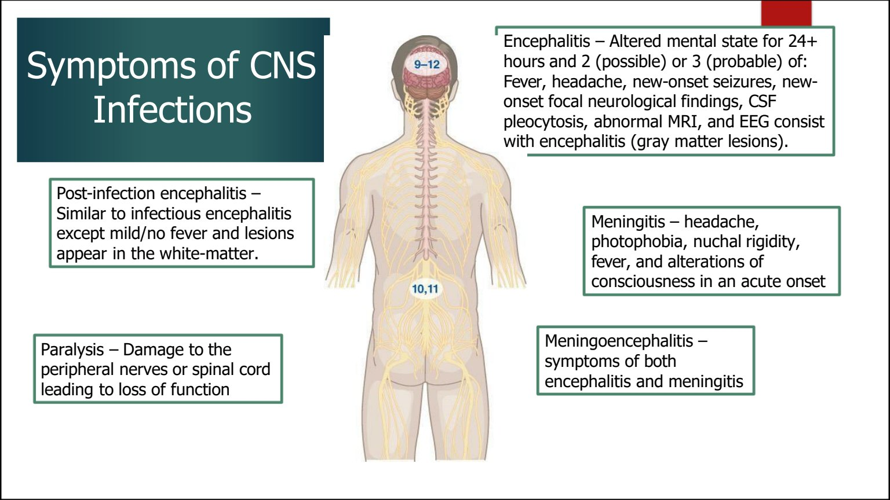</a></details><details><summary>Original extracted text</summary><pre class="transcript">Meningitis – headache, 
photophobia, nuchal rigidity, 
fever, and alterations of 
consciousness in an acute onset
Encephalitis – Altered mental state for 24+ 
hours and 2 (possible) or 3 (probable) of: 
Fever, headache, new-onset seizures, new￾onset focal neurological findings, CSF 
pleocytosis, abnormal MRI, and EEG consist 
with encephalitis (gray matter lesions).
Paralysis – Damage to the 
peripheral nerves or spinal cord 
leading to loss of function
Post-infection encephalitis –
Similar to infectious encephalitis 
except mild/no fever and lesions 
appear in the white-matter.
Meningoencephalitis –
symptoms of both 
encephalitis and meningitis
Symptoms of CNS 
Infections</pre></details></section><section class="slide" id="slide-inf-20"><h3>Original slide 20</h3><details><summary>Mapped concepts and practice</summary><ul><li><a href="index.html?q=Q056">Q056</a> — Typical viral CSF shows lymphocytic pleocytosis and normal glucose with modest protein elevation. This is a pattern, not definitive organism identification.</li><li><a href="index.html?q=Q064">Q064</a> — CSF PCR can establish a viral diagnosis in the right syndrome. A negative early HSV result may require repeat testing if suspicion remains high.</li><li><a href="index.html?q=Q092">Q092</a> — Viremia can precede barrier crossing. Some pathogens also use infected leukocytes; target-cell tropism influences the resulting syndrome.</li><li><a href="index.html?q=Q093">Q093</a> — Rabies uses neural transport after peripheral inoculation. This route differs from ordinary bloodstream dissemination.</li><li><a href="index.html?q=Q100">Q100</a> — Viruses may target neurons, glia, or endothelium and different anatomic regions, changing presentation and imaging.</li><li><a href="index.html?q=Q101">Q101</a> — Enteroviruses are common aseptic meningitis agents. Clinical syndrome alone does not specify every serotype, and early CSF may still be neutrophilic.</li><li><a href="index.html?q=Q160">Q160</a> — A negative test or a panel lacking the organism cannot exclude every CNS infection. Interpretation should integrate clinical syndrome and exposure/host information.</li><li><a href="index.html?q=Q166">Q166</a> — Temporal parenchymal injury with behavioral change and seizures is characteristic of HSV-1 encephalitis. CSF PCR supports diagnosis; hemorrhagic CSF can occur but is neither required nor specific by itself.</li><li><a href="index.html?q=Q169">Q169</a> — Naegleria causes primary amebic meningoencephalitis after contaminated water enters the nose. A neutrophilic CSF profile does not make it bacterial; fresh wet mount and specific molecular testing can identify the organism.</li></ul></details><details><summary>Show original slide image and credits</summary><a href="images/inf-020.jpg" target="_blank" rel="noopener">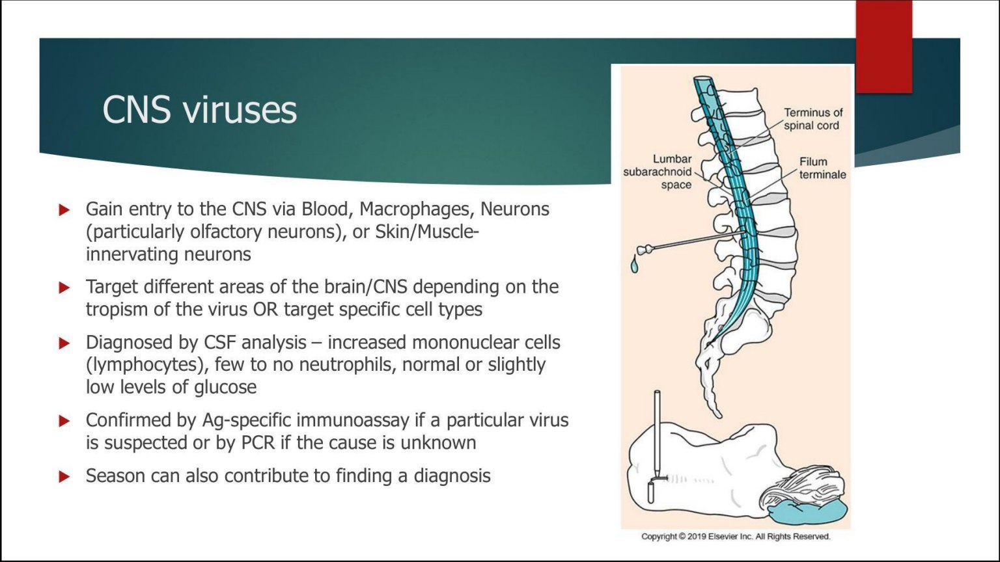</a></details><details><summary>Original extracted text</summary><pre class="transcript">Image-only source: inspect the full original slide above.</pre></details></section><section class="slide" id="slide-inf-21"><h3>Original slide 21</h3><details><summary>Mapped concepts and practice</summary><ul><li><a href="index.html?q=Q055">Q055</a> — The marked neutrophilia, high protein, and ratio 0.25 support bacterial meningitis. Culture, Gram stain, and appropriate molecular testing are needed, and treatment should be prompt.</li><li><a href="index.html?q=Q056">Q056</a> — Typical viral CSF shows lymphocytic pleocytosis and normal glucose with modest protein elevation. This is a pattern, not definitive organism identification.</li><li><a href="index.html?q=Q061">Q061</a> — Low CSF glucose relative to serum supports bacterial infection in this comparison. TB and fungal disease can also lower glucose, and a normal value does not exclude early bacterial disease.</li><li><a href="index.html?q=Q062">Q062</a> — Preserved glucose is characteristic of many viral cases. CMV, mumps, and other exceptions mean glucose cannot classify all cases with certainty.</li><li><a href="index.html?q=Q063">Q063</a> — Gram stain can be rapid and culture supports organism identification and susceptibility. Negative results, especially after antibiotics, do not rule out bacterial infection.</li><li><a href="index.html?q=Q064">Q064</a> — CSF PCR can establish a viral diagnosis in the right syndrome. A negative early HSV result may require repeat testing if suspicion remains high.</li><li><a href="index.html?q=Q073">Q073</a> — Divide 36 by 120. This low ratio supports a bacterial, TB, fungal, or other hypoglycorrhachic process in context rather than a typical uncomplicated viral pattern.</li><li><a href="index.html?q=Q074">Q074</a> — Cell type is probabilistic. Early neutrophils do not exclude viral disease, but possible bacterial meningitis still requires urgent assessment rather than automatic reassurance.</li><li><a href="index.html?q=Q075">Q075</a> — Listerial meningitis can have mixed or mononuclear cells, so host risk and microbiology matter more than a rigid bacterial/viral cell-type rule.</li><li><a href="index.html?q=Q085">Q085</a> — Listeria is important in older/immunocompromised hosts and neonates. Its CSF differential can be mixed; routine cephalosporins do not provide reliable coverage.</li><li><a href="index.html?q=Q103">Q103</a> — HSV-2 can cause recurrent lymphocytic meningitis. A meningeal syndrome differs from the classic HSV-1 temporal-parenchymal presentation.</li><li><a href="index.html?q=Q158">Q158</a> — Diagnostic sampling is valuable, but suspected bacterial meningitis requires time-sensitive treatment. Imaging or procedural delay should not delay antibiotics.</li><li><a href="index.html?q=Q160">Q160</a> — A negative test or a panel lacking the organism cannot exclude every CNS infection. Interpretation should integrate clinical syndrome and exposure/host information.</li><li><a href="index.html?q=Q164">Q164</a> — The ratio is 0.20 with marked neutrophilic inflammation and high protein. Invasive meningococcal disease is a concern given the rash/context, but the pattern alone does not identify the organism. Prompt empiric therapy is essential.</li><li><a href="index.html?q=Q166">Q166</a> — Temporal parenchymal injury with behavioral change and seizures is characteristic of HSV-1 encephalitis. CSF PCR supports diagnosis; hemorrhagic CSF can occur but is neither required nor specific by itself.</li></ul></details><details><summary>Show original slide image and credits</summary><a href="images/inf-021.jpg" target="_blank" rel="noopener">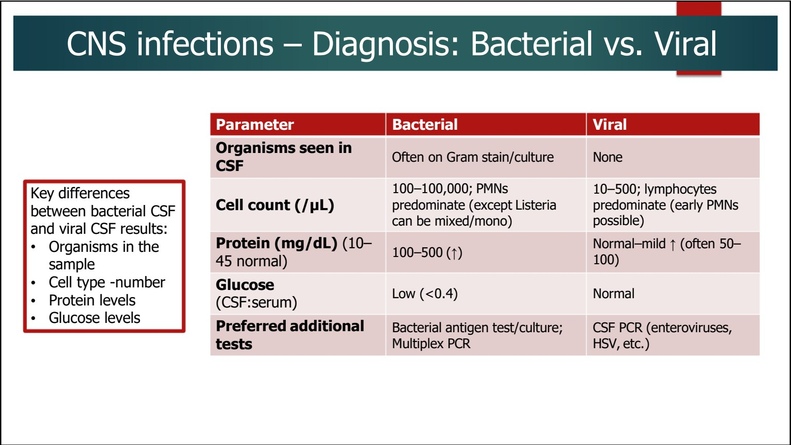</a></details><details><summary>Original extracted text</summary><pre class="transcript">CNS infections – Diagnosis: Bacterial vs. Viral
Parameter Bacterial Viral
Organisms seen in 
CSF Often on Gram stain/culture None
Cell count (/µL)
100–100,000; PMNs
predominate (except Listeria 
can be mixed/mono)
100–500 (↑)
10–500; lymphocytes 
predominate (early PMNs 
possible)
Normal–mild ↑ (often 50–
100)
Low (&lt;0.4) Normal
Protein (mg/dL) (10–
45 normal)
Glucose
(CSF:serum)
Preferred additional 
tests
Bacterial antigen test/culture; 
Multiplex PCR
CSF PCR (enteroviruses, 
HSV, etc.)
Key differences 
between bacterial CSF 
and viral CSF results:
•
•
•
• Organisms in the 
sample
Cell type -number 
Protein levels 
Glucose levels</pre></details></section><section class="slide" id="slide-inf-22"><h3>Original slide 22</h3><details><summary>Mapped concepts and practice</summary><ul><li><a href="index.html?q=Q092">Q092</a> — Viremia can precede barrier crossing. Some pathogens also use infected leukocytes; target-cell tropism influences the resulting syndrome.</li><li><a href="index.html?q=Q093">Q093</a> — Rabies uses neural transport after peripheral inoculation. This route differs from ordinary bloodstream dissemination.</li><li><a href="index.html?q=Q100">Q100</a> — Viruses may target neurons, glia, or endothelium and different anatomic regions, changing presentation and imaging.</li><li><a href="index.html?q=Q169">Q169</a> — Naegleria causes primary amebic meningoencephalitis after contaminated water enters the nose. A neutrophilic CSF profile does not make it bacterial; fresh wet mount and specific molecular testing can identify the organism.</li></ul></details><details><summary>Show original slide image and credits</summary><a href="images/inf-022.jpg" target="_blank" rel="noopener">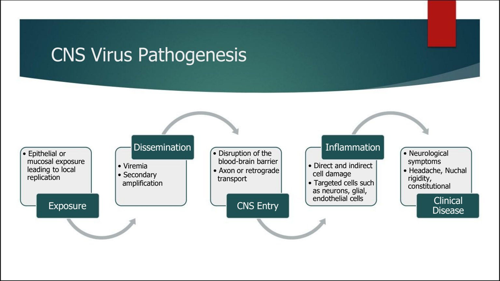</a></details><details><summary>Original extracted text</summary><pre class="transcript">CNS Virus Pathogenesis
• Epithelial or 
mucosal exposure 
leading to local 
replication
Exposure
Dissemination
• Viremia
• Secondary
amplification
• Disruption of the
blood-brain barrier
• Axon or retrograde
transport
CNS Entry
Inflammation
• Direct and indirect
cell damage
• Targeted cells such 
as neurons, glial, 
endothelial cells
• Neurological
symptoms
• Headache, Nuchal 
rigidity, 
constitutional
Clinical 
Disease</pre></details></section><section class="slide" id="slide-inf-23"><h3>Original slide 23</h3><details><summary>Mapped concepts and practice</summary><ul><li><a href="index.html?q=Q101">Q101</a> — Enteroviruses are common aseptic meningitis agents. Clinical syndrome alone does not specify every serotype, and early CSF may still be neutrophilic.</li><li><a href="index.html?q=Q113">Q113</a> — The source graph shows a possible biphasic illness and different detection windows in blood, throat, stool, and CSF. Its timeline is illustrative, not identical for all types.</li><li><a href="index.html?q=Q114">Q114</a> — Different enteroviruses can cause overlapping neurologic syndromes; a type-to-syndrome table is not a one-to-one rule.</li><li><a href="index.html?q=Q115">Q115</a> — The table preserves older nomenclature. Current classification should not treat HAV as a routine modern enterovirus CNS cause solely from that old label.</li></ul></details><details><summary>Show original slide image and credits</summary><a href="images/inf-023.jpg" target="_blank" rel="noopener">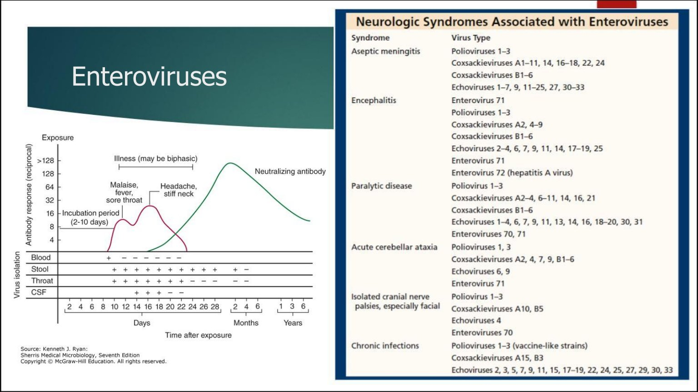</a></details><details><summary>Original extracted text</summary><pre class="transcript">Enteroviruses</pre></details></section><section class="slide" id="slide-inf-24"><h3>Original slide 24</h3><details><summary>Mapped concepts and practice</summary><ul><li><a href="index.html?q=Q116">Q116</a> — HFMD and herpangina are classic Coxsackie A associations. The syndrome can also involve EV-A71 and other types, so the association is not exclusive.</li><li><a href="index.html?q=Q117">Q117</a> — Herpangina commonly involves Coxsackie A. It is an oral syndrome and does not automatically imply encephalitis.</li><li><a href="index.html?q=Q118">Q118</a> — Coxsackie B is associated with pleurodynia and myocarditis. The table also lists neonatal disease, orchitis, and pancreatic associations.</li><li><a href="index.html?q=Q119">Q119</a> — Acute hemorrhagic conjunctivitis is associated with Coxsackie A24 variant and enterovirus 70. It is distinct from a corneal ulcer.</li><li><a href="index.html?q=Q120">Q120</a> — Coxsackie illness commonly includes meningitis and may fluctuate over days. New progressive lethargy, disorientation, or seizures suggest more serious parenchymal involvement.</li><li><a href="index.html?q=Q121">Q121</a> — Selected nonpolio enteroviruses can cause motor disease. The source gives specific historical A-type examples; syndrome and confirmatory testing are more useful than assuming paralysis proves polio.</li><li><a href="index.html?q=Q122">Q122</a> — The table also includes carditis and rash in both groups. Associations are not proof of causation for every individual episode of diabetes or pancreatitis.</li><li><a href="index.html?q=Q123">Q123</a> — Such lesions may occur in several infections, including enteroviral illness, but fever with nonblanching rash raises urgent concern for meningococcemia and other serious causes.</li></ul></details><details><summary>Show original slide image and credits</summary><a href="images/inf-024.jpg" target="_blank" rel="noopener">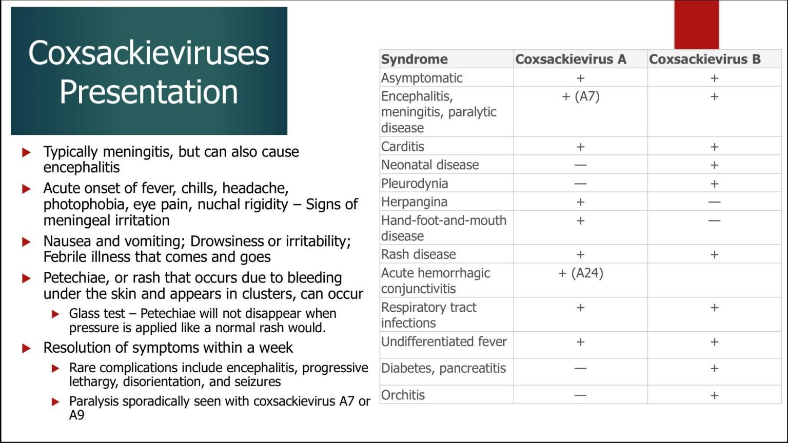</a></details><details><summary>Original extracted text</summary><pre class="transcript">Image-only source: inspect the full original slide above.</pre></details></section><section class="slide" id="slide-inf-25"><h3>Original slide 25</h3><details><summary>Mapped concepts and practice</summary><ul><li><a href="index.html?q=Q064">Q064</a> — CSF PCR can establish a viral diagnosis in the right syndrome. A negative early HSV result may require repeat testing if suspicion remains high.</li><li><a href="index.html?q=Q071">Q071</a> — EEG can identify seizure activity and support parenchymal dysfunction. It complements MRI and CSF rather than identifying a virus by itself.</li><li><a href="index.html?q=Q072">Q072</a> — MRI helps define parenchymal versus extra-axial disease, edema, and mass effect. Imaging may need to precede LP when a mass lesion or other contraindication is suspected.</li><li><a href="index.html?q=Q102">Q102</a> — HSV-1 classically causes necrotizing temporal encephalitis. CSF PCR is useful; treatment should not be delayed while awaiting confirmation when suspicion is substantial.</li><li><a href="index.html?q=Q159">Q159</a> — A mass lesion may create dangerous pressure gradients. LP is often unhelpful or unsafe in focal abscess; imaging and specialist/source-directed evaluation take priority.</li><li><a href="index.html?q=Q166">Q166</a> — Temporal parenchymal injury with behavioral change and seizures is characteristic of HSV-1 encephalitis. CSF PCR supports diagnosis; hemorrhagic CSF can occur but is neither required nor specific by itself.</li></ul></details><details><summary>Show original slide image and credits</summary><a href="images/inf-025.jpg" target="_blank" rel="noopener">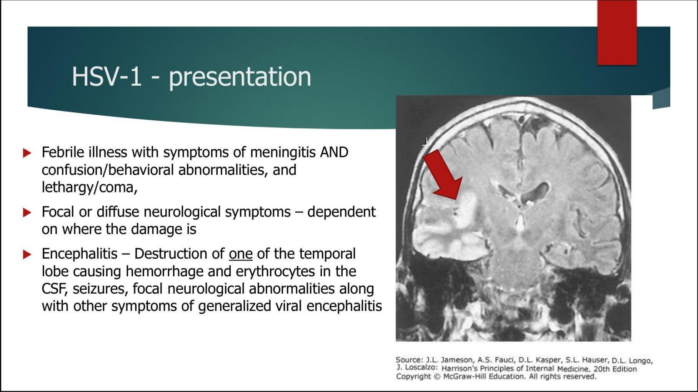</a></details><details><summary>Original extracted text</summary><pre class="transcript">Image-only source: inspect the full original slide above.</pre></details></section><section class="slide" id="slide-inf-26"><h3>Original slide 26</h3><details><summary>Mapped concepts and practice</summary><ul><li><a href="index.html?q=Q049">Q049</a> — AFM is a clinical/radiologic syndrome with motor gray-matter injury and nonpolio causes, including some enteroviruses. Sensory findings are often less prominent than weakness.</li><li><a href="index.html?q=Q050">Q050</a> — Motor, sensory, and autonomic involvement supports transverse myelitis. Symmetry is common but not absolute, and early reflexes may be reduced during spinal shock.</li><li><a href="index.html?q=Q109">Q109</a> — West Nile neuroinvasive disease can combine meningoencephalitis and a polio-like motor syndrome. This is a nonpolio cause of acute flaccid paralysis.</li><li><a href="index.html?q=Q110">Q110</a> — Anterior horn motor neuron injury causes weakness, wasting, and hyporeflexia with relative sensory sparing. Poliovirus also causes nonparalytic/asymptomatic infections.</li><li><a href="index.html?q=Q121">Q121</a> — Selected nonpolio enteroviruses can cause motor disease. The source gives specific historical A-type examples; syndrome and confirmatory testing are more useful than assuming paralysis proves polio.</li></ul></details><details><summary>Show original slide image and credits</summary><a href="images/inf-026.jpg" target="_blank" rel="noopener">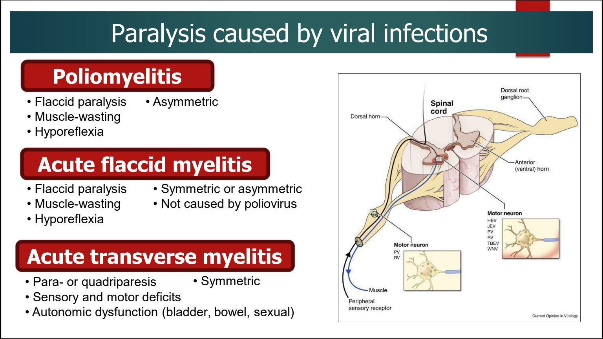</a></details><details><summary>Original extracted text</summary><pre class="transcript">Paralysis caused by viral infections
Poliomyelitis
Acute flaccid myelitis
Acute transverse myelitis
• Flaccid paralysis
• Muscle-wasting
• Hyporeflexia
• Flaccid paralysis
• Muscle-wasting
• Hyporeflexia
• Asymmetric
• Symmetric or asymmetric
• Not caused by poliovirus
• Para- or quadriparesis
• Sensory and motor deficits
• Autonomic dysfunction (bladder, bowel, sexual)
• Symmetric</pre></details></section><section class="slide" id="slide-inf-27"><h3>Original slide 27</h3><details><summary>Mapped concepts and practice</summary><ul><li><a href="index.html?q=Q093">Q093</a> — Rabies uses neural transport after peripheral inoculation. This route differs from ordinary bloodstream dissemination.</li><li><a href="index.html?q=Q108">Q108</a> — Rabies can produce hydrophobia from pharyngeal spasms, followed by progressive neurologic disease. Hydrophobia is characteristic but not present in every case.</li><li><a href="index.html?q=Q124">Q124</a> — Wound care, exposure risk assessment, and indicated PEP act before established neurologic infection. Waiting for symptoms forfeits this preventive opportunity.</li><li><a href="index.html?q=Q125">Q125</a> — Motor and sensory neural pathways can contribute. The slide’s dorsal-root-focused diagram is a simplified illustration, not an exclusive route.</li><li><a href="index.html?q=Q126">Q126</a> — Incubation is variable, often weeks to months, but can be shorter or longer. The slide’s 60–365-day table is not a strict boundary.</li><li><a href="index.html?q=Q129">Q129</a> — Seizures, hallucinations, disorientation, pharyngeal spasms, and paralysis can occur. Once symptoms appear, rabies is nearly always fatal, with rare exceptions.</li><li><a href="index.html?q=Q130">Q130</a> — Centrifugal dissemination supports transmission by saliva. Clinical appearance alone does not replace exposure-specific public health assessment.</li><li><a href="index.html?q=Q131">Q131</a> — Passive antibody offers immediate local protection while vaccination induces active immunity. Previously vaccinated patients and immunocompromised patients have different details; dosing/placement follows current guidance.</li><li><a href="index.html?q=Q167">Q167</a> — Rabies can incubate after wound healing, then enter neural pathways and cause devastating CNS disease. Water-triggered pharyngeal spasms are characteristic; prophylaxis acts before symptoms and is not replaced by waiting for clinical illness.</li></ul></details><details><summary>Show original slide image and credits</summary><a href="images/inf-027.jpg" target="_blank" rel="noopener">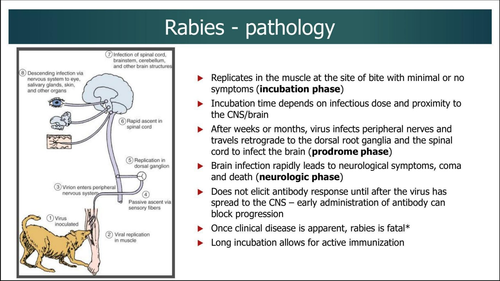</a></details><details><summary>Original extracted text</summary><pre class="transcript">Image-only source: inspect the full original slide above.</pre></details></section><section class="slide" id="slide-inf-28"><h3>Original slide 28</h3><details><summary>Mapped concepts and practice</summary><ul><li><a href="index.html?q=Q108">Q108</a> — Rabies can produce hydrophobia from pharyngeal spasms, followed by progressive neurologic disease. Hydrophobia is characteristic but not present in every case.</li><li><a href="index.html?q=Q124">Q124</a> — Wound care, exposure risk assessment, and indicated PEP act before established neurologic infection. Waiting for symptoms forfeits this preventive opportunity.</li><li><a href="index.html?q=Q126">Q126</a> — Incubation is variable, often weeks to months, but can be shorter or longer. The slide’s 60–365-day table is not a strict boundary.</li><li><a href="index.html?q=Q127">Q127</a> — The prodrome is nonspecific, but unusual sensations at the exposure site can be a clue before encephalitic or paralytic disease.</li><li><a href="index.html?q=Q128">Q128</a> — Water-triggered swallowing spasms can produce apparent fear of drinking. Hydrophobia is characteristic but neither universal nor required in paralytic rabies.</li><li><a href="index.html?q=Q129">Q129</a> — Seizures, hallucinations, disorientation, pharyngeal spasms, and paralysis can occur. Once symptoms appear, rabies is nearly always fatal, with rare exceptions.</li><li><a href="index.html?q=Q130">Q130</a> — Centrifugal dissemination supports transmission by saliva. Clinical appearance alone does not replace exposure-specific public health assessment.</li><li><a href="index.html?q=Q167">Q167</a> — Rabies can incubate after wound healing, then enter neural pathways and cause devastating CNS disease. Water-triggered pharyngeal spasms are characteristic; prophylaxis acts before symptoms and is not replaced by waiting for clinical illness.</li></ul></details><details><summary>Show original slide image and credits</summary><a href="images/inf-028.jpg" target="_blank" rel="noopener">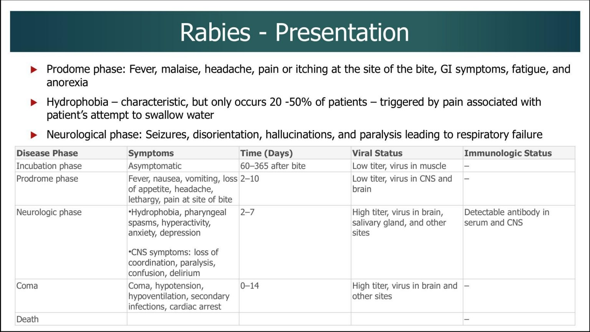</a></details><details><summary>Original extracted text</summary><pre class="transcript">Image-only source: inspect the full original slide above.</pre></details></section><section class="slide" id="slide-inf-29"><h3>Original slide 29</h3><details><summary>Mapped concepts and practice</summary><ul><li><a href="index.html?q=Q094">Q094</a> — Transient bacteremia can precede meningeal invasion. Barrier disruption and the host inflammatory response produce CNS injury after entry.</li><li><a href="index.html?q=Q099">Q099</a> — Subarachnoid inflammation disrupts normal physiology and can contribute to edema, ischemia, hydrocephalus, and altered consciousness.</li><li><a href="index.html?q=Q158">Q158</a> — Diagnostic sampling is valuable, but suspected bacterial meningitis requires time-sensitive treatment. Imaging or procedural delay should not delay antibiotics.</li><li><a href="index.html?q=Q164">Q164</a> — The ratio is 0.20 with marked neutrophilic inflammation and high protein. Invasive meningococcal disease is a concern given the rash/context, but the pattern alone does not identify the organism. Prompt empiric therapy is essential.</li></ul></details><details><summary>Show original slide image and credits</summary><a href="images/inf-029.jpg" target="_blank" rel="noopener">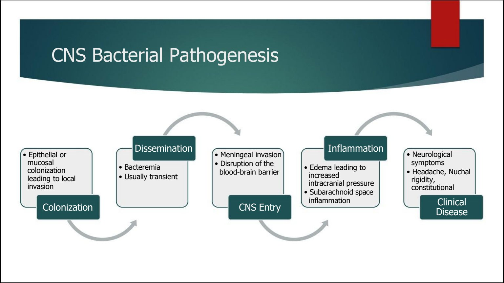</a></details><details><summary>Original extracted text</summary><pre class="transcript">CNS Bacterial Pathogenesis
• Epithelial or 
mucosal 
colonization 
leading to local 
invasion
Colonization
Dissemination
• Bacteremia
• Usually transient
• Meningeal invasion
• Disruption of the
blood-brain barrier
CNS Entry
Inflammation
• Edema leading to 
increased 
intracranial pressure
• Subarachnoid space
inflammation
• Neurological
symptoms
• Headache, Nuchal 
rigidity, 
constitutional
Clinical 
Disease</pre></details></section><section class="slide" id="slide-inf-30"><h3>Original slide 30</h3><details><summary>Mapped concepts and practice</summary><ul><li><a href="index.html?q=Q055">Q055</a> — The marked neutrophilia, high protein, and ratio 0.25 support bacterial meningitis. Culture, Gram stain, and appropriate molecular testing are needed, and treatment should be prompt.</li><li><a href="index.html?q=Q056">Q056</a> — Typical viral CSF shows lymphocytic pleocytosis and normal glucose with modest protein elevation. This is a pattern, not definitive organism identification.</li><li><a href="index.html?q=Q061">Q061</a> — Low CSF glucose relative to serum supports bacterial infection in this comparison. TB and fungal disease can also lower glucose, and a normal value does not exclude early bacterial disease.</li><li><a href="index.html?q=Q062">Q062</a> — Preserved glucose is characteristic of many viral cases. CMV, mumps, and other exceptions mean glucose cannot classify all cases with certainty.</li><li><a href="index.html?q=Q063">Q063</a> — Gram stain can be rapid and culture supports organism identification and susceptibility. Negative results, especially after antibiotics, do not rule out bacterial infection.</li><li><a href="index.html?q=Q064">Q064</a> — CSF PCR can establish a viral diagnosis in the right syndrome. A negative early HSV result may require repeat testing if suspicion remains high.</li><li><a href="index.html?q=Q073">Q073</a> — Divide 36 by 120. This low ratio supports a bacterial, TB, fungal, or other hypoglycorrhachic process in context rather than a typical uncomplicated viral pattern.</li><li><a href="index.html?q=Q074">Q074</a> — Cell type is probabilistic. Early neutrophils do not exclude viral disease, but possible bacterial meningitis still requires urgent assessment rather than automatic reassurance.</li><li><a href="index.html?q=Q075">Q075</a> — Listerial meningitis can have mixed or mononuclear cells, so host risk and microbiology matter more than a rigid bacterial/viral cell-type rule.</li><li><a href="index.html?q=Q160">Q160</a> — A negative test or a panel lacking the organism cannot exclude every CNS infection. Interpretation should integrate clinical syndrome and exposure/host information.</li><li><a href="index.html?q=Q164">Q164</a> — The ratio is 0.20 with marked neutrophilic inflammation and high protein. Invasive meningococcal disease is a concern given the rash/context, but the pattern alone does not identify the organism. Prompt empiric therapy is essential.</li></ul></details><details><summary>Show original slide image and credits</summary><a href="images/inf-030.jpg" target="_blank" rel="noopener">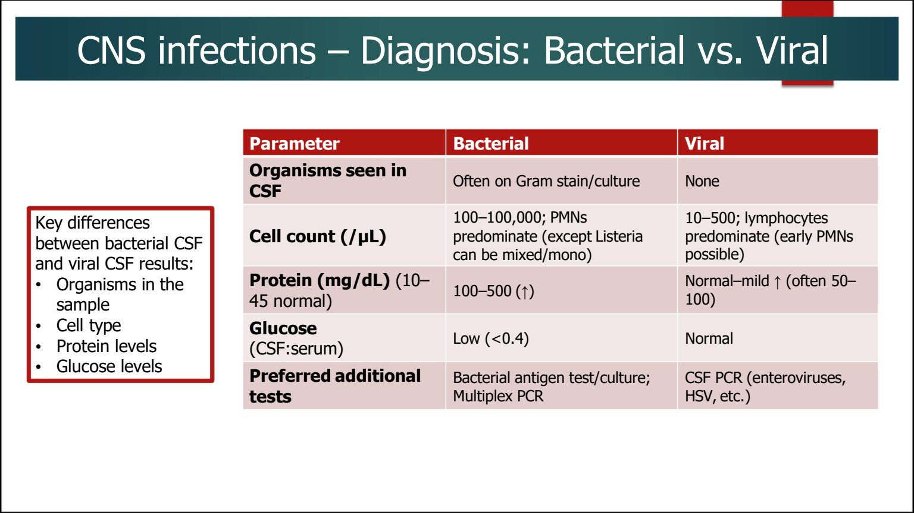</a></details><details><summary>Original extracted text</summary><pre class="transcript">CNS infections – Diagnosis: Bacterial vs. Viral
Parameter Bacterial Viral
Organisms seen in 
CSF Often on Gram stain/culture None
Cell count (/µL)
100–100,000; PMNs
predominate (except Listeria 
can be mixed/mono)
100–500 (↑)
10–500; lymphocytes 
predominate (early PMNs 
possible)
Normal–mild ↑ (often 50–
100)
Low (&lt;0.4) Normal
Protein (mg/dL) (10–
45 normal)
Glucose
(CSF:serum)
Preferred additional 
tests
Bacterial antigen test/culture; 
Multiplex PCR
CSF PCR (enteroviruses, 
HSV, etc.)
Key differences 
between bacterial CSF 
and viral CSF results:
•
•
•
• Organisms in the 
sample
Cell type 
Protein levels 
Glucose levels</pre></details></section><section class="slide" id="slide-inf-31"><h3>Original slide 31</h3><details><summary>Mapped concepts and practice</summary><ul><li><a href="index.html?q=Q078">Q078</a> — Meningeal irritation can cause reflex hip/knee flexion with passive neck flexion. Sensitivity is limited, so absence does not exclude meningitis.</li><li><a href="index.html?q=Q079">Q079</a> — Stretching irritated meninges can cause this response. A negative sign does not safely rule out meningitis.</li><li><a href="index.html?q=Q080">Q080</a> — Infants may lack the classic adult description of headache and stiff neck. Seizures, altered consciousness, and purpura can also occur.</li><li><a href="index.html?q=Q081">Q081</a> — S. agalactiae is a major neonatal meningitis pathogen. The age and microbiology distinguish it from common older-child meningococci or pneumococci.</li><li><a href="index.html?q=Q082">Q082</a> — E. coli is an important neonatal CNS pathogen, and the K1 capsule is associated with neuroinvasive strains.</li><li><a href="index.html?q=Q083">Q083</a> — Meningococcal meningitis can accompany invasive bacteremia and a nonblanching petechial/purpuric rash. This is an urgent illness; rash is neither required nor uniquely diagnostic.</li><li><a href="index.html?q=Q123">Q123</a> — Such lesions may occur in several infections, including enteroviral illness, but fever with nonblanching rash raises urgent concern for meningococcemia and other serious causes.</li><li><a href="index.html?q=Q158">Q158</a> — Diagnostic sampling is valuable, but suspected bacterial meningitis requires time-sensitive treatment. Imaging or procedural delay should not delay antibiotics.</li><li><a href="index.html?q=Q164">Q164</a> — The ratio is 0.20 with marked neutrophilic inflammation and high protein. Invasive meningococcal disease is a concern given the rash/context, but the pattern alone does not identify the organism. Prompt empiric therapy is essential.</li></ul></details><details><summary>Show original slide image and credits</summary><a href="images/inf-031.jpg" target="_blank" rel="noopener">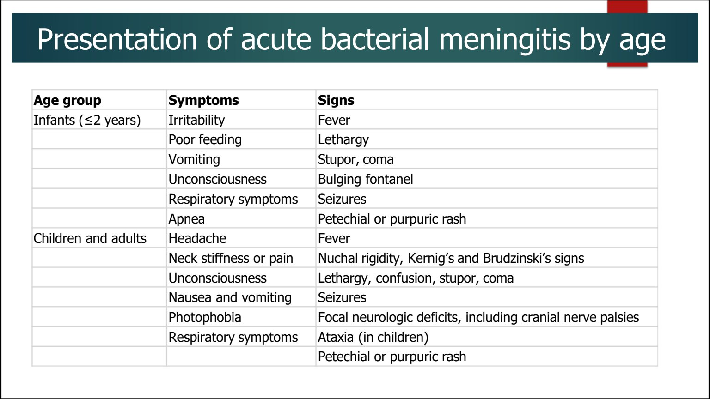</a></details><details><summary>Original extracted text</summary><pre class="transcript">Age group Symptoms Signs
Infants (≤2 years) Irritability Fever
Poor feeding Lethargy
Vomiting Stupor, coma
Unconsciousness Bulging fontanel
Respiratory symptoms Seizures
Apnea Petechial or purpuric rash
Children and adults Headache Fever
Neck stiffness or pain Nuchal rigidity, Kernig’s and Brudzinski’s signs
Unconsciousness Lethargy, confusion, stupor, coma
Nausea and vomiting Seizures
Photophobia Focal neurologic deficits, including cranial nerve palsies
Respiratory symptoms Ataxia (in children)
Petechial or purpuric rash
Presentation of acute bacterial meningitis by age</pre></details></section><section class="slide" id="slide-inf-32"><h3>Original slide 32</h3><details><summary>Mapped concepts and practice</summary><ul><li><a href="index.html?q=Q057">Q057</a> — Chronicity, lymphocytes, high protein, and low glucose with a compatible exposure favor TB. Fungal disease can resemble this, so specific tests are required.</li><li><a href="index.html?q=Q058">Q058</a> — Neurosyphilis can cause a milder lymphocytic CSF profile. CSF VDRL and sensitive treponemal tests have different diagnostic roles.</li><li><a href="index.html?q=Q059">Q059</a> — Profound immune suppression can blunt CSF inflammation in cryptococcosis. A low cell count does not exclude serious fungal CNS infection.</li><li><a href="index.html?q=Q065">Q065</a> — CrAg detects cryptococcal capsular antigen and is more sensitive than relying only on India ink. It is not a universal test for every fungus.</li><li><a href="index.html?q=Q066">Q066</a> — A smear has limited sensitivity. TB-specific molecular tests and culture are important, but clinical suspicion still matters after negative results.</li><li><a href="index.html?q=Q067">Q067</a> — A positive CSF VDRL supports neurosyphilis in context, but a negative result cannot independently exclude it.</li><li><a href="index.html?q=Q068">Q068</a> — Treponemal tests can support evaluation, especially after a negative VDRL, but serum antibody diffusion and clinical context affect interpretation.</li><li><a href="index.html?q=Q087">Q087</a> — TB meningitis is a subacute/chronic process with characteristic basal complications. NAAT and culture are more useful than relying only on an insensitive smear.</li><li><a href="index.html?q=Q088">Q088</a> — T. pallidum can cause meningitis and broader neurosyphilitic syndromes. A positive appropriately interpreted CSF VDRL supports CNS involvement.</li><li><a href="index.html?q=Q132">Q132</a> — Cryptococcus commonly causes subacute meningoencephalitis in this host. CSF can have few cells despite severe disease, and raised pressure is clinically important.</li><li><a href="index.html?q=Q160">Q160</a> — A negative test or a panel lacking the organism cannot exclude every CNS infection. Interpretation should integrate clinical syndrome and exposure/host information.</li><li><a href="index.html?q=Q165">Q165</a> — Cryptococcus can produce severe meningoencephalitis with little CSF pleocytosis in an immunocompromised host. Opening pressure and organism-specific antigen findings are crucial; a mild cell count is not evidence of trivial disease.</li></ul></details><details><summary>Show original slide image and credits</summary><a href="images/inf-032.jpg" target="_blank" rel="noopener">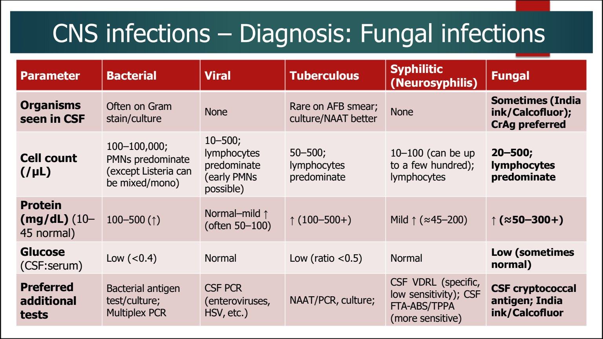</a></details><details><summary>Original extracted text</summary><pre class="transcript">CNS infections – Diagnosis: Fungal infections
Parameter Bacterial Viral Tuberculous Syphilitic
(Neurosyphilis)
Organisms 
seen in CSF
Often on Gram 
stain/culture None Rare on AFB smear; 
culture/NAAT better None
Fungal
Sometimes (India 
ink/Calcofluor); 
CrAg preferred
Cell count 
(/µL)
100–100,000;
PMNs predominate 
(except Listeria can
be mixed/mono)
10–500;
lymphocytes 
predominate
(early PMNs 
possible)
50–500;
lymphocytes 
predominate
10–100 (can be up
to a few hundred);
lymphocytes
20–500;
lymphocytes 
predominate
100–500 (↑) Normal–mild ↑
(often 50–100) ↑ (100–500+) Mild ↑ (≈45–200) ↑ (≈50–300+)
Low (&lt;0.4) Normal Low (ratio &lt;0.5) Normal Low (sometimes 
normal)
Protein
(mg/dL) (10–
45 normal)
Glucose
(CSF:serum)
Preferred
additional
tests
Bacterial antigen 
test/culture; 
Multiplex PCR
CSF PCR
(enteroviruses, 
HSV, etc.)
NAAT/PCR, culture;
CSF VDRL (specific,
low sensitivity); CSF
FTA-ABS/TPPA
(more sensitive)
CSF cryptococcal 
antigen; India 
ink/Calcofluor</pre></details></section><section class="slide" id="slide-inf-33"><h3>Original slide 33</h3><details><summary>Mapped concepts and practice</summary><ul><li><a href="index.html?q=Q059">Q059</a> — Profound immune suppression can blunt CSF inflammation in cryptococcosis. A low cell count does not exclude serious fungal CNS infection.</li><li><a href="index.html?q=Q095">Q095</a> — The deck emphasizes bloodstream spread in fungal CNS disease. Host immune state and the organism determine meningeal, vascular, or parenchymal manifestations.</li><li><a href="index.html?q=Q132">Q132</a> — Cryptococcus commonly causes subacute meningoencephalitis in this host. CSF can have few cells despite severe disease, and raised pressure is clinically important.</li><li><a href="index.html?q=Q133">Q133</a> — Coccidioides can disseminate to meninges. Geographic exposure and chronic low-glucose CSF refine the differential but require specific confirmation.</li><li><a href="index.html?q=Q134">Q134</a> — Hematogenous Candida can invade parenchyma and produce microabscesses. This differs from a purely superficial colonization diagnosis.</li><li><a href="index.html?q=Q135">Q135</a> — Angioinvasion causes vascular injury, infarction, or hemorrhage. The deck emphasizes vascular and mass-forming manifestations of invasive molds.</li><li><a href="index.html?q=Q136">Q136</a> — Rhino-orbital-cerebral mucormycosis can spread contiguously and invade vessels. The older &#x27;zygomycetes&#x27; table label is broader historical terminology.</li><li><a href="index.html?q=Q137">Q137</a> — Histoplasma can involve CNS during dissemination. This is a supplemental organism-identification application of the fungal table.</li><li><a href="index.html?q=Q138">Q138</a> — Broad-based budding is a high-yield Blastomyces clue. CNS involvement can be meningeal or focal, although less common than pulmonary disease.</li><li><a href="index.html?q=Q139">Q139</a> — Sporothrix is included in the table as an occasional meningeal cause. A familiar cutaneous association does not exclude disseminated CNS disease.</li><li><a href="index.html?q=Q140">Q140</a> — Cryptococcus and Coccidioides emphasize meningitis, while invasive molds prominently involve vessels and focal masses. Organisms can overlap these categories.</li><li><a href="index.html?q=Q141">Q141</a> — The table indicates tendencies toward meningitis or mass lesions. It does not provide a denominator, patient-specific risk, or current incidence for every region.</li><li><a href="index.html?q=Q165">Q165</a> — Cryptococcus can produce severe meningoencephalitis with little CSF pleocytosis in an immunocompromised host. Opening pressure and organism-specific antigen findings are crucial; a mild cell count is not evidence of trivial disease.</li></ul></details><details><summary>Show original slide image and credits</summary><a href="images/inf-033.jpg" target="_blank" rel="noopener">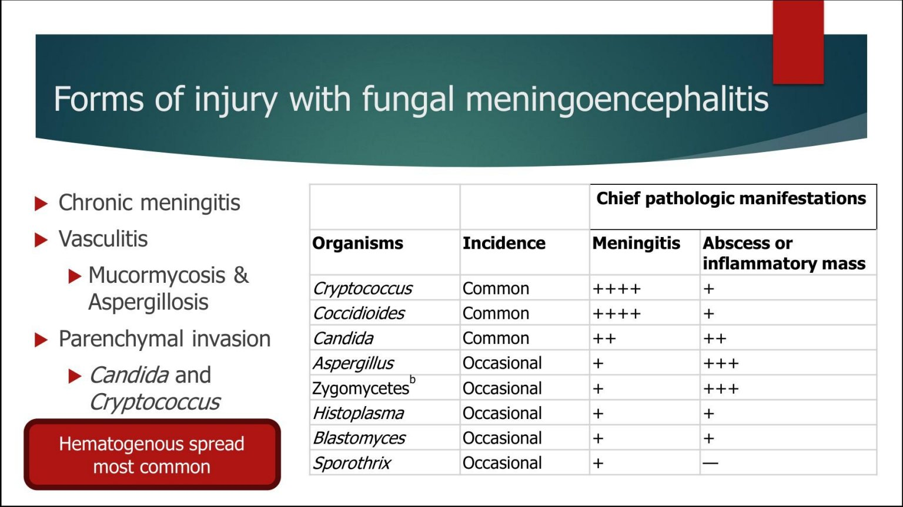</a></details><details><summary>Original extracted text</summary><pre class="transcript">Image-only source: inspect the full original slide above.</pre></details></section><section class="slide" id="slide-inf-34"><h3>Original slide 34</h3><details><summary>Mapped concepts and practice</summary><ul><li><a href="index.html?q=Q055">Q055</a> — The marked neutrophilia, high protein, and ratio 0.25 support bacterial meningitis. Culture, Gram stain, and appropriate molecular testing are needed, and treatment should be prompt.</li><li><a href="index.html?q=Q056">Q056</a> — Typical viral CSF shows lymphocytic pleocytosis and normal glucose with modest protein elevation. This is a pattern, not definitive organism identification.</li><li><a href="index.html?q=Q057">Q057</a> — Chronicity, lymphocytes, high protein, and low glucose with a compatible exposure favor TB. Fungal disease can resemble this, so specific tests are required.</li><li><a href="index.html?q=Q058">Q058</a> — Neurosyphilis can cause a milder lymphocytic CSF profile. CSF VDRL and sensitive treponemal tests have different diagnostic roles.</li><li><a href="index.html?q=Q059">Q059</a> — Profound immune suppression can blunt CSF inflammation in cryptococcosis. A low cell count does not exclude serious fungal CNS infection.</li><li><a href="index.html?q=Q060">Q060</a> — Eosinophilia suggests selected helminthic causes, not every parasite. Naegleria may cause a neutrophilic pattern and toxoplasmosis is often primarily parenchymal.</li><li><a href="index.html?q=Q065">Q065</a> — CrAg detects cryptococcal capsular antigen and is more sensitive than relying only on India ink. It is not a universal test for every fungus.</li><li><a href="index.html?q=Q066">Q066</a> — A smear has limited sensitivity. TB-specific molecular tests and culture are important, but clinical suspicion still matters after negative results.</li><li><a href="index.html?q=Q067">Q067</a> — A positive CSF VDRL supports neurosyphilis in context, but a negative result cannot independently exclude it.</li><li><a href="index.html?q=Q068">Q068</a> — Treponemal tests can support evaluation, especially after a negative VDRL, but serum antibody diffusion and clinical context affect interpretation.</li><li><a href="index.html?q=Q069">Q069</a> — Naegleria trophozoites may be visible in a fresh wet mount. Specific reference PCR/microscopy confirms identity rather than treating the organisms as leukocytes.</li><li><a href="index.html?q=Q070">Q070</a> — The differential highlights eosinophils; serologic or molecular testing is selected for the suspected parasite and local availability.</li><li><a href="index.html?q=Q087">Q087</a> — TB meningitis is a subacute/chronic process with characteristic basal complications. NAAT and culture are more useful than relying only on an insensitive smear.</li><li><a href="index.html?q=Q088">Q088</a> — T. pallidum can cause meningitis and broader neurosyphilitic syndromes. A positive appropriately interpreted CSF VDRL supports CNS involvement.</li><li><a href="index.html?q=Q144">Q144</a> — Naegleria enters through nasal/olfactory pathways and causes PAM. The CSF can resemble bacterial meningitis with neutrophils and low glucose.</li><li><a href="index.html?q=Q151">Q151</a> — Naegleria can be neutrophilic, other protozoal cases can be lymphocytic, and a focal parenchymal infection may have little CSF inflammation.</li><li><a href="index.html?q=Q160">Q160</a> — A negative test or a panel lacking the organism cannot exclude every CNS infection. Interpretation should integrate clinical syndrome and exposure/host information.</li><li><a href="index.html?q=Q165">Q165</a> — Cryptococcus can produce severe meningoencephalitis with little CSF pleocytosis in an immunocompromised host. Opening pressure and organism-specific antigen findings are crucial; a mild cell count is not evidence of trivial disease.</li><li><a href="index.html?q=Q169">Q169</a> — Naegleria causes primary amebic meningoencephalitis after contaminated water enters the nose. A neutrophilic CSF profile does not make it bacterial; fresh wet mount and specific molecular testing can identify the organism.</li></ul></details><details><summary>Show original slide image and credits</summary><a href="images/inf-034.jpg" target="_blank" rel="noopener">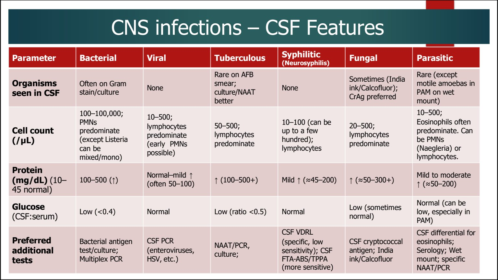</a></details><details><summary>Original extracted text</summary><pre class="transcript">CNS infections – CSF Features
Parameter Bacterial Viral Syphilitic
(Neurosyphilis) Fungal
Organisms 
seen in CSF
Often on Gram 
stain/culture None
Tuberculous
Rare on AFB 
smear; 
culture/NAAT 
better
None
Sometimes (India 
ink/Calcofluor); 
CrAg preferred
Cell count 
(/µL)
100–100,000; 
PMNs
predominate 
(except Listeria 
can be
mixed/mono)
10–500;
lymphocytes
predominate
(early PMNs
possible)
50–500;
lymphocytes
predominate
10–100 (can be 
up to a few 
hundred); 
lymphocytes
20–500;
lymphocytes
predominate
Parasitic
Rare (except 
motile amoebas in 
PAM on wet 
mount)
10–500;
Eosinophils often 
predominate. Can 
be PMNs 
(Naegleria) or 
lymphocytes.
100–500 (↑) Normal–mild ↑
(often 50–100) ↑ (100–500+) Mild ↑ (≈45–200) ↑ (≈50–300+) Mild to moderate
↑ (≈50–200)
Protein 
(mg/dL) (10–
45 normal)
Glucose
(CSF:serum) Low (&lt;0.4) Normal Low (ratio &lt;0.5) Normal Low (sometimes 
normal)
Preferred
additional
tests
Bacterial antigen 
test/culture; 
Multiplex PCR
CSF PCR
(enteroviruses, 
HSV, etc.)
NAAT/PCR,
culture;
CSF VDRL
(specific, low 
sensitivity); CSF 
FTA-ABS/TPPA
(more sensitive)
CSF cryptococcal 
antigen; India 
ink/Calcofluor
Normal (can be 
low, especially in 
PAM)
CSF differential for 
eosinophils; 
Serology; Wet 
mount; specific 
NAAT/PCR</pre></details></section><section class="slide" id="slide-inf-35"><h3>Original slide 35</h3><details><summary>Mapped concepts and practice</summary><ul><li><a href="index.html?q=Q051">Q051</a> — Contiguous spread can produce a focal pyogenic collection with surrounding edema. Ring enhancement has a broad differential and must be interpreted with clinical and imaging details.</li><li><a href="index.html?q=Q072">Q072</a> — MRI helps define parenchymal versus extra-axial disease, edema, and mass effect. Imaging may need to precede LP when a mass lesion or other contraindication is suspected.</li><li><a href="index.html?q=Q090">Q090</a> — Hematogenous seeding from endocarditis can cause brain infection. This differs from the mixed oral/anaerobic flora often found after contiguous sinus or dental spread.</li><li><a href="index.html?q=Q091">Q091</a> — Contiguous spread commonly involves streptococci and anaerobic partners. The source guides empiric coverage and diagnostic sampling.</li><li><a href="index.html?q=Q096">Q096</a> — Nearby infected skull/air sinus structures can extend intracranially. This can lead to empyema or abscess without requiring a primary bloodstream source.</li><li><a href="index.html?q=Q097">Q097</a> — Barrier disruption permits direct entry from a wound or procedure. The inoculation context affects likely organisms.</li><li><a href="index.html?q=Q142">Q142</a> — Reactivation toxoplasmosis commonly causes focal encephalitis/abscess-like lesions. Primary CNS lymphoma and other infections remain alternatives; ring enhancement alone is not diagnostic.</li><li><a href="index.html?q=Q143">Q143</a> — Neurocysticercosis can produce viable, degenerating, or calcified cysts. It is a larval cyst disease rather than an ordinary bacterial pus collection.</li><li><a href="index.html?q=Q150">Q150</a> — Eggs release larvae that invade tissues. Eating pork containing cysticerci instead produces intestinal taeniasis, not direct tissue cysticercosis.</li><li><a href="index.html?q=Q152">Q152</a> — Degenerating cysts can enhance and cause seizures, but their biology and management differ from a bacterial pus collection.</li><li><a href="index.html?q=Q159">Q159</a> — A mass lesion may create dangerous pressure gradients. LP is often unhelpful or unsafe in focal abscess; imaging and specialist/source-directed evaluation take priority.</li><li><a href="index.html?q=Q170">Q170</a> — Human cysticercosis follows ingestion of eggs from a human carrier. It can occur without pork consumption. Larval brain cysts can be viable, inflamed, or calcified and should not be equated with a uniform pyogenic abscess.</li></ul></details><details><summary>Show original slide image and credits</summary><a href="images/inf-035.jpg" target="_blank" rel="noopener">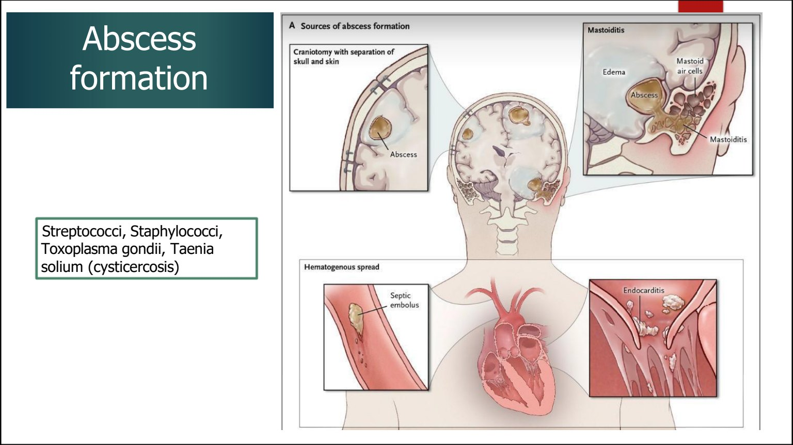</a></details><details><summary>Original extracted text</summary><pre class="transcript">Abscess 
formation
Streptococci, Staphylococci, 
Toxoplasma gondii, Taenia 
solium (cysticercosis)</pre></details></section><section class="slide" id="slide-inf-36"><h3>Original slide 36</h3><details><summary>Mapped concepts and practice</summary><ul><li><a href="index.html?q=Q052">Q052</a> — The collection is subdural, not within brain tissue or outside dura. This is a neurosurgical/infectious emergency because rapid spread and mass effect can occur.</li><li><a href="index.html?q=Q053">Q053</a> — Intracranial epidural infection occupies the extradural space. It is distinct from a spinal epidural abscess, although both are outside dura.</li><li><a href="index.html?q=Q072">Q072</a> — MRI helps define parenchymal versus extra-axial disease, edema, and mass effect. Imaging may need to precede LP when a mass lesion or other contraindication is suspected.</li><li><a href="index.html?q=Q091">Q091</a> — Contiguous spread commonly involves streptococci and anaerobic partners. The source guides empiric coverage and diagnostic sampling.</li><li><a href="index.html?q=Q096">Q096</a> — Nearby infected skull/air sinus structures can extend intracranially. This can lead to empyema or abscess without requiring a primary bloodstream source.</li><li><a href="index.html?q=Q157">Q157</a> — Organisms depend on source, trauma/surgery, and host. Anaerobic gram-negative organisms can be included; fungal causes occur in selected hosts rather than every case.</li><li><a href="index.html?q=Q159">Q159</a> — A mass lesion may create dangerous pressure gradients. LP is often unhelpful or unsafe in focal abscess; imaging and specialist/source-directed evaluation take priority.</li></ul></details><details><summary>Show original slide image and credits</summary><a href="images/inf-036.jpg" target="_blank" rel="noopener">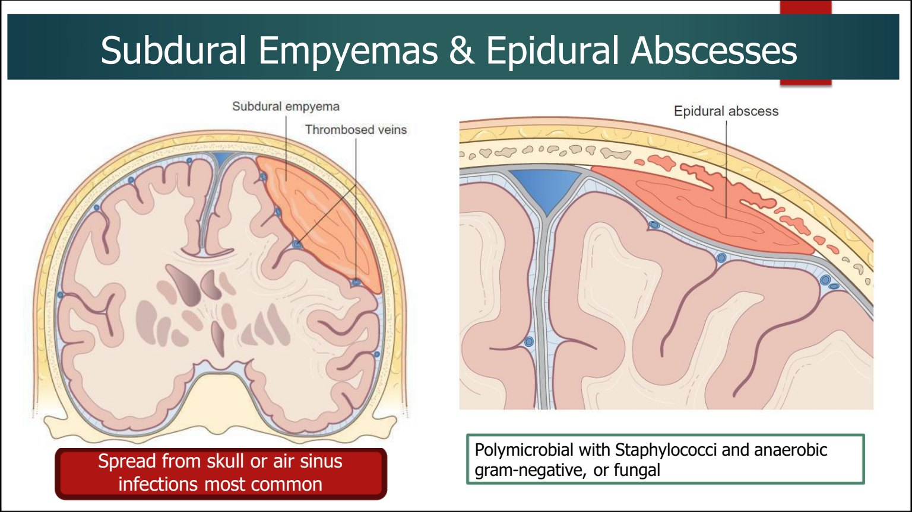</a></details><details><summary>Original extracted text</summary><pre class="transcript">Subdural Empyemas &amp; Epidural Abscesses
Polymicrobial with Staphylococci and anaerobic 
gram-negative, or fungal Spread from skull or air sinus 
infections most common</pre></details></section><section class="slide" id="slide-inf-37"><h3>Original slide 37</h3><details><summary>Mapped concepts and practice</summary><ul><li><a href="index.html?q=Q083">Q083</a> — Meningococcal meningitis can accompany invasive bacteremia and a nonblanching petechial/purpuric rash. This is an urgent illness; rash is neither required nor uniquely diagnostic.</li><li><a href="index.html?q=Q084">Q084</a> — Pneumococcal invasive disease is promoted by impaired clearance of encapsulated bacteria. Ear/sinus infection or a CSF leak can also be relevant sources/risks.</li><li><a href="index.html?q=Q085">Q085</a> — Listeria is important in older/immunocompromised hosts and neonates. Its CSF differential can be mixed; routine cephalosporins do not provide reliable coverage.</li><li><a href="index.html?q=Q086">Q086</a> — Hib invasive disease differs from common nontypeable middle-ear disease. Vaccination changes population incidence but does not make every H. influenzae infection vaccine-preventable.</li><li><a href="index.html?q=Q102">Q102</a> — HSV-1 classically causes necrotizing temporal encephalitis. CSF PCR is useful; treatment should not be delayed while awaiting confirmation when suspicion is substantial.</li><li><a href="index.html?q=Q104">Q104</a> — VZV can cause direct CNS infection and vasculopathy; a rash may help but is not mandatory in every neurologic case.</li><li><a href="index.html?q=Q107">Q107</a> — Acute HIV can produce aseptic meningitis/meningoencephalitis. This is separate from opportunistic infections resulting from advanced immune deficiency.</li><li><a href="index.html?q=Q108">Q108</a> — Rabies can produce hydrophobia from pharyngeal spasms, followed by progressive neurologic disease. Hydrophobia is characteristic but not present in every case.</li><li><a href="index.html?q=Q109">Q109</a> — West Nile neuroinvasive disease can combine meningoencephalitis and a polio-like motor syndrome. This is a nonpolio cause of acute flaccid paralysis.</li><li><a href="index.html?q=Q132">Q132</a> — Cryptococcus commonly causes subacute meningoencephalitis in this host. CSF can have few cells despite severe disease, and raised pressure is clinically important.</li><li><a href="index.html?q=Q133">Q133</a> — Coccidioides can disseminate to meninges. Geographic exposure and chronic low-glucose CSF refine the differential but require specific confirmation.</li><li><a href="index.html?q=Q142">Q142</a> — Reactivation toxoplasmosis commonly causes focal encephalitis/abscess-like lesions. Primary CNS lymphoma and other infections remain alternatives; ring enhancement alone is not diagnostic.</li><li><a href="index.html?q=Q143">Q143</a> — Neurocysticercosis can produce viable, degenerating, or calcified cysts. It is a larval cyst disease rather than an ordinary bacterial pus collection.</li><li><a href="index.html?q=Q145">Q145</a> — Acanthamoeba can cause granulomatous amebic encephalitis and keratitis, with different entry routes and host contexts.</li><li><a href="index.html?q=Q147">Q147</a> — Hydatid disease results from the larval stage after egg ingestion. Avoiding rupture is an important procedural concern; it is distinct from a pyogenic abscess.</li><li><a href="index.html?q=Q148">Q148</a> — Infected erythrocyte sequestration and microvascular dysfunction contribute to cerebral malaria. This is not a typical focal larval cyst infection.</li><li><a href="index.html?q=Q149">Q149</a> — African trypanosomiasis can progress from systemic infection to CNS involvement. Geography, exposure, parasite detection, and staging guide evaluation.</li><li><a href="index.html?q=Q150">Q150</a> — Eggs release larvae that invade tissues. Eating pork containing cysticerci instead produces intestinal taeniasis, not direct tissue cysticercosis.</li><li><a href="index.html?q=Q153">Q153</a> — Prion propagation involves misfolded protein, not a conventional bacterium or virus. Spongiform neurodegeneration is distinct from the deck’s usual inflammatory meningitis/encephalitis patterns.</li><li><a href="index.html?q=Q154">Q154</a> — Both are arboviral encephalitis agents. West Nile is also mosquito-borne but belongs to a different viral family/genus grouping.</li><li><a href="index.html?q=Q166">Q166</a> — Temporal parenchymal injury with behavioral change and seizures is characteristic of HSV-1 encephalitis. CSF PCR supports diagnosis; hemorrhagic CSF can occur but is neither required nor specific by itself.</li><li><a href="index.html?q=Q167">Q167</a> — Rabies can incubate after wound healing, then enter neural pathways and cause devastating CNS disease. Water-triggered pharyngeal spasms are characteristic; prophylaxis acts before symptoms and is not replaced by waiting for clinical illness.</li><li><a href="index.html?q=Q170">Q170</a> — Human cysticercosis follows ingestion of eggs from a human carrier. It can occur without pork consumption. Larval brain cysts can be viable, inflamed, or calcified and should not be equated with a uniform pyogenic abscess.</li></ul></details><details><summary>Show original slide image and credits</summary><a href="images/inf-037.jpg" target="_blank" rel="noopener">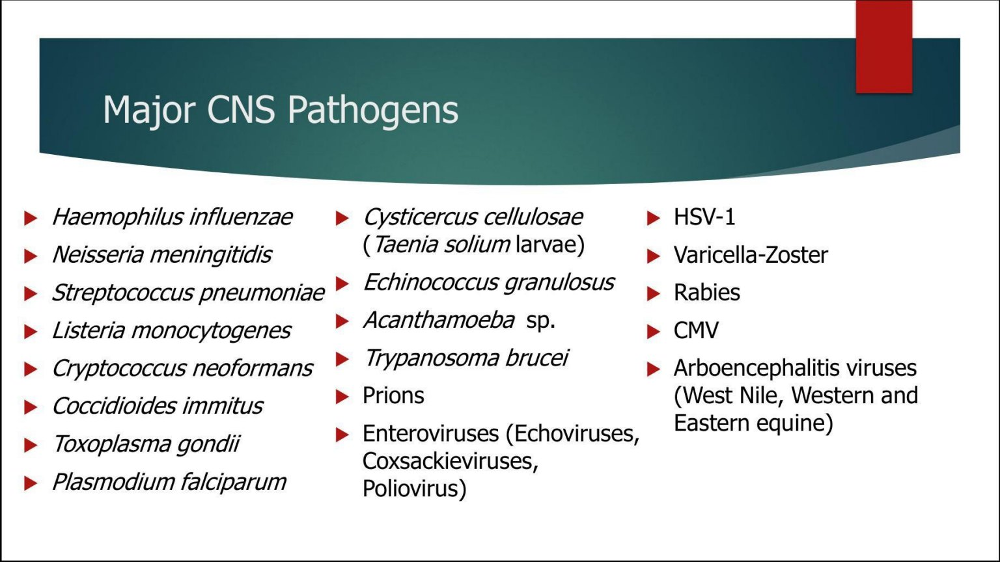</a></details><details><summary>Original extracted text</summary><pre class="transcript">Image-only source: inspect the full original slide above.</pre></details></section></main><footer>Original NBME-style educational questions, not official NBME items. Based on the supplied CNS, Eye and Ear Infections lecture by Lloyd Jensen and Amy Stone. Original slide images, text, and credits are preserved in the source guide.</footer></body></html>